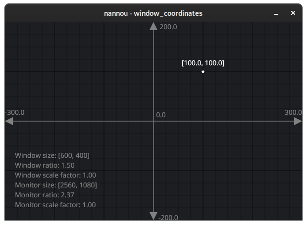
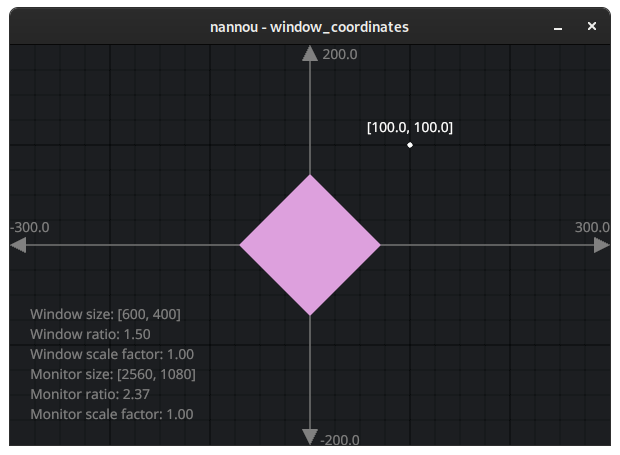
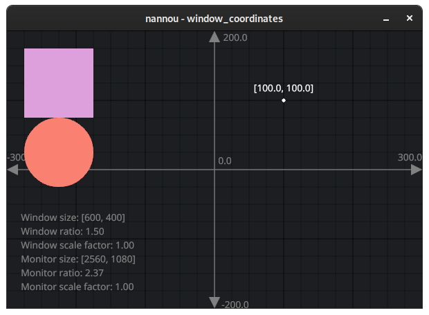
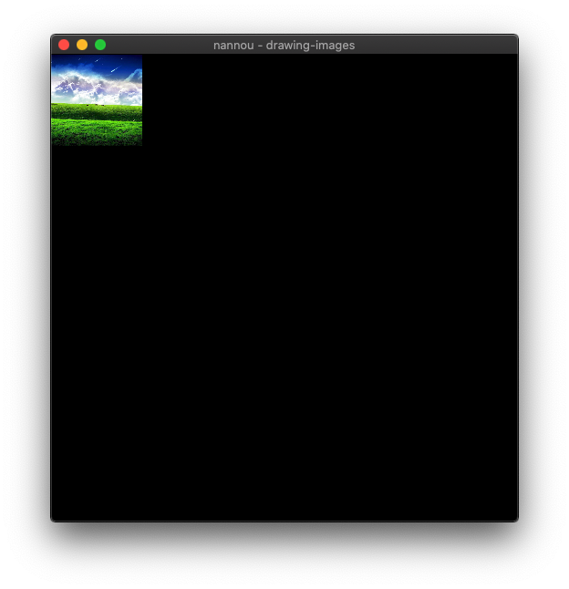

Welcome!
Nannou is an open-source, creative-coding toolkit for Rust.
The aim of this guide is to help you find the information you are looking for. Whether you are new to Nannou and are looking for a place to start, or you are an experienced Nannou user looking for more advanced tutorials, this book should have something for you!
As excited as we are about developing tools for creative coding, we are equally excited about fostering a warm, welcoming and inclusive community. Please make yourself familiar with our Code of Conduct and feel free to join us on the Nannou Slack or Matrix community.
Why Nannou?
Here you can read about the motivations and philosophy behind Nannou. Why start Nannou? What drives forward progress?
Getting Started
Is this your first time using Nannou or Rust? This is the chapter for you. This chapter covers everything from installing Rust right through to starting your own Nannou project.
Tutorials
A suite of tutorials demonstrating how to do different things with Nannou. For example, "How do I output sounds?", "How do I draw shapes?", "How can I connect to my laser?"
You can find more tutorials by the community here.
Developer Reference
Learn more about the design philosophy behind Nannou, how the project is architected and how you can contribute.
API Reference
If you are looking for the source code reference, check out docs.rs/nannou. Here you can find documentation about the API generated from the code itself.
Showcases
See what's possible with Nannou! A collection of projects made with Nannou.
Why Nannou?
nannou is a collection of code aimed at making it easy for artists to express themselves with simple, fast, reliable, portable code. Whether working on a 12-month installation or a 5 minute sketch, this framework aims to give artists easy access to the tools they need.
The project was started out of a desire for a creative coding framework inspired by Processing, OpenFrameworks and Cinder, but for Rust. Named after this.
Goals
Nannou aims to provide easy, cross-platform access to the things that artists need:
- Windowing & Events via winit.
- Audio via CPAL. Input and output streams. Duplex are not yet supported.
- Video input, playback and processing (would love suggestions and ideas).
- GUI via conrod. May switch to a custom nannou solution in the future.
- Geometry with functions and iterators for producing vertices and indices:
-
1D -
Scalar,Range. -
2D -
Path,Polyline,Polygon,Rect,Line,Ellipse,Quad,Tri. -
3D -
Cuboid. -
3D TODO -
Ellipsoid,Cube, Prisms, Pyramids, *Hedrons, Camera, etc. - Vertex & index iterators.
- Graph for composing geometry.
-
1D -
- Graphics via WGPU (via wgpu-rs):
- Protocols:
- OSC - Open Sound Control.
- ISF - Interactive Shader Format.
- CITP - Controller Interface Transport Protocol (network implementation is in progress).
- Ether-Dream Laser DAC protocol and network implementation.
- DMX via sACN - commonly used for lighting and effects.
- Serial - commonly used for interfacing with LEDs and other hardware.
- MIDI - No friendly nannou API is provided yet, but cross-platform MIDI I/O is possible via midir.
- UDP via std.
- TCP streams and listeners via std.
- Device & I/O stream APIs:
- Windowing.
- Application events.
- Audio.
- Video.
- Lasers.
- Lights. For now, we recommend DMX via the sacn crate.
- LEDs. For now, we recommend DMX via the sacn crate.
- Graphical Node Graph via gantz.
- GUI Editor.
Nannou aims to use only pure-rust libraries. As a new user you should
require nothing more than cargo build to get going. Falling back to C-bindings
will be considered as a temporary solution in the case that there are no Rust
alternatives yet in development. We prefer to drive forward development of less
mature rust-alternatives than depend on bindings to C code. This should make it
easier for nannou users to become nannou contributors as they do not have to
learn a second language in order to contribute upstream.
Nannou will not contain unsafe code with the exception of bindings to
operating systems or hardware APIs if necessary.
Nannou wishes to remove the need to decide between lots of different backends that provide access to the same hardware. Instead, we want to focus on a specific set of backends and make sure that they work well.
Why Rust?
Rust is a language that is both highly expressive and blazingly fast. Here are some of the reasons why we choose to use it:
- Super fast, as in C and C++ fast.
- A standard package manager that makes it very easy to handle dependencies and share your own projects in seconds.
- Highly portable. Easily build for MacOS, Linux, Windows, Android, iOS and so many others.
- No header files and no weird linking errors.
- Sum Types and Pattern Matching and no
NULL. - Local type inference. Only write types where it matters, no need to repeat yourself.
- A more modern, ƒunctional and expressive style.
- Memory safe and data-race-free! Get your ideas down without the fear of creating pointer spaghetti or segfault time-sinks.
- Immutability by default. Easily distinguish between variables that can change and those that can't at a glance.
- Module system resulting in very clean and concise name spaces.
- One of the kindest internet communities we've come across. Please visit mozilla's #rust or /r/rust if you're starting out and need any pointers.
Why the Apache/MIT dual licensing?
For the most part, nannou is trying to maintain as much flexibility and compatibility with the licensing of Rust itself, which is also dual licensed.
The Apache 2.0 and MIT license are very similar, but have a few key differences. Using the Apache 2.0 license for contributions triggers the Apache 2.0 patent grant. This grant is designed to protect against leveraging the patent law system to bypass (some) terms of the license. If the contribution is under the Apache 2.0 license, the contributor assures that they will not claim a violation of (their own) patents. If someone makes a work based on Apache 2.0 licensed code, they in turn also vow to not sue their users (for patent infringement). The MIT license provides compatibility with a lot of other FLOSS licenses.
Further reading:
- Apache License, Version 2.0
- MIT License
- Please read: Rust license changing (very slightly)
- Rationale of Apache dual licensing
- Against what does the Apache 2.0 patent clause protect?
- GPLv2 Combination Exception for the Apache 2 License
Getting Started
If you are new to nannou or Rust, you are in the right place!
In this section, we will:
- Install the Rust programming language.
- Check for platform-specific requirements.
- Setup our code editor for working with Rust.
- Run some nannou examples.
- Make our own, new nannou project!
Let's get started.
Platform-specific Setup
Before we get started, let's make sure we have all the necessary ingredients for installing Rust and building nannou projects.
Depending on what OS you are running, you might require an extra step or two.
By the way, if you notice some steps are missing from this section of the guide, feel free to open an issue or PR at the nannou guide repo!
macOS
Ensure that you have xcode-tools installed:
xcode-select --install
Some examples require that you have cmake installed as well. The easiest way to achieve this is to use Homebrew.
brew install cmake
This should provide all the developer tools needed for building nannou.
Windows
Rust requires the C++ build tools for Visual Studio. The Rust book has this to say:
On Windows, go to https://www.rust-lang.org/tools/install and follow the instructions for installing Rust. At some point in the installation, you’ll receive a message explaining that you’ll also need the C++ build tools for Visual Studio 2013 or later. The easiest way to acquire the build tools is to install Build Tools for Visual Studio 2019. The tools are in the Other Tools and Frameworks section.
Linux
Ensure you have the following system packages installed:
-
Basic dev packages
First make sure the basic dev packages are installed.
curlwill be required byrustupthe rust toolchain manager.build-essentialwill be required byrustcthe rust compiler for linking.pkg-configis used by some build scripts to source information about certain libraries.alsadev packages are required fornannou_audio.
For Debian/Ubuntu users:
sudo apt-get install curl build-essential python cmake pkg-config -
alsa dev package
For Fedora users:
sudo dnf install alsa-lib-develFor Debian/Ubuntu users:
sudo apt-get install libasound2-devFor Arch users:
sudo pacman -S alsa-lib -
curl lib dev package
Nannou depends on the
curl-syscrate. Some Linux distributions use LibreSSL instead of OpenSSL (such as AlpineLinux, Voidlinux, possibly others if manually installed). -
xcb
The XCB library provides inter-operability with Xlib.
For Debian/Ubuntu users:
sudo apt install libxcb-shape0-dev libxcb-xfixes0-devYou might also need
python3for thexcbcrate's build script. -
vulkan
Installing Vulkan support on Linux is generally quite easy using your distro's package manager. That said, there may be different driver options to consider depending on your graphics card and tolerance for proprietary software. The following are rough guidelines on how to get going quickly, however if you are at all concerned with finding the approach that suits you best we recommend searching for vulkan driver installation for your graphics card on your distro.
For Fedora with AMD graphic cards:
sudo dnf install vulkan vulkan-infoFor Fedora with NVIDIA graphic cards: Add the proprietary drivers
sudo dnf install https://download1.rpmfusion.org/free/fedora/rpmfusion-free-release-$(rpm -E %fedora).noarch.rpm https://download1.rpmfusion.org/nonfree/fedora/rpmfusion-nonfree-release-$(rpm -E %fedora).noarch.rpmand run
sudo dnf install xorg-x11-drv-nvidia akmod-nvidia vulkan-toolsFor Debian with AMD or Intel graphic cards:
sudo apt-get install libvulkan1 mesa-vulkan-drivers vulkan-utilsFor Debian with NVIDIA graphic cards:
sudo apt-get install vulkan-toolsOr, on older versions (pre-Buster i.e., < 10):
sudo apt-get install vulkan-utilsFor Ubuntu users with AMD or Intel graphic cards: Add a PPA for the latest drivers
sudo add-apt-repository ppa:oibaf/graphics-drivers sudo apt-get update sudo apt-get upgradeand run
sudo apt-get install libvulkan1 mesa-vulkan-drivers vulkan-utilsFor Ubuntu users with NVIDIA graphic cards: Add a PPA for the latest drivers
sudo add-apt-repository ppa:graphics-drivers/ppa sudo apt-get update sudo apt-get upgradeand run
sudo apt-get install nvidia-graphics-drivers-396 nvidia-settings vulkan vulkan-utilsFor Arch with AMD graphic cards:
sudo pacman -S vulkan-radeon lib32-vulkan-radeonFor Arch with Intel graphics card:
sudo pacman -S vulkan-intelFor Arch with NVIDIA graphic cards:
sudo pacman -S nvidia lib32-nvidia-utilsFor Gentoo run:
sudo emerge --ask --verbose dev-util/vulkan-tools dev-util/vulkan-headers
OK, we should now be ready to install Rust!
Installing Rust
Nannou is a library written for the Rust programming language. Thus, the first step is to install Rust!
To install Rust on Windows, download and run the installer from here. If you're on macOS or Linux, open up your terminal, copy the text below, paste it into your terminal and hit enter.
curl https://sh.rustup.rs -sSf | sh
Now Rust is installed!
Next we will install some tools that help IDEs do fancy things like auto-completion and go-to-definition.
rustup component add rust-src rustfmt-preview rust-analysis
Please see this link if you would like more information on the Rust installation process.
Editor Setup
While most popular development environments support Rust, support for certain features like auto-completion and go-to-definition is better in some than others.
VS Code
For new Rust users we recommend using VS-Code as your editor and IDE for Nannou development. Currently it seems to have the best support for the Rust language including syntax highlighting, auto-complete, code formatting and more. It also comes with an integrated unix terminal and file navigation system. Below are the steps we recommend for getting started with Nannou development using VS-Code.
- Download VS-Code for your OS.
- In VS code user settings, set
"rust-client.channel": "stable". - Install RLS (the Rust Language Server) plugin for VS-Code.
- Click on the 'view' menu and select 'integrated terminal'.
Other Environments
Here are links to assist with setting up other popular development environments for supporting Rust.
Running Examples
The easiest way to get familiar with nannou is to explore the examples.
Nannou provides three collections of examples:
| Path | Description |
|---|---|
examples/ | A collection of examples with categorised demonstrations of nannou. |
generative_design/ | Examples from Generative Gestaltung, ported from p5.js to nannou. |
nature_of_code/ | Examples from Nature of Code, ported from Processing to nannou. |
To get the examples we can clone the nannou repository.
git clone https://github.com/nannou-org/nannou
If you do not have git installed you can press the "Clone or download" button
at the top of this page and then press "Download .zip".
Now, change the current directory to nannou.
cd nannou
Run the example using cargo!
cargo run --release --example draw
The --release flag means we want to build with optimisations enabled.
The value passed via the --example flag matches the name property of an
entry within the [[examples]] table of the package's Cargo.toml file. The
matched entry's path property points to the source file to build:
# Draw
[[example]]
name = "draw"
path = "draw/draw.rs"
If we were to look through the nature of code directory and decide we want to run the following example:
# Chapter 1 Vectors
[[example]]
name = "1_1_bouncingball_novectors"
path = "chp_01_vectors/1_1_bouncingball_novectors.rs"
We could do so with the following:
cargo run --release --example 1_1_bouncingball_novectors
In general, the name of the example will almost always be the file name without
the .rs extension.
If you are compiling nannou for the first time you will see cargo download and build all the necessary dependencies. This might take a while! Luckily, we only have to wait for this the first time.

Once the example compiles you should see the following window appear.

To run any of the other examples, replace draw with the name of the
desired example.
Create A Project
Whether we are creating an artwork, an app, a quick sketch or an installation, we want to begin by creating a new project. A new nannou project lets us build a nannou application the way that we want to use it.
Eventually, the aim for Nannou is to provide a project generator tool which will allow us to do the following and much more in just a few clicks. For now, we can create a new project with just a few small steps:
-
Create the Rust project with the name of our project:
cargo new my-project -
Change directory to the generated project.
cd my-project -
Edit the
Cargo.tomlfile and add the latest version of nannou to the bottom like so:[package] name = "my_project" version = "0.1.0" authors = ["mitchmindtree <mitchell.nordine@gmail.com>"] edition = "2018" [dependencies] nannou = "0.17"Note that there is a chance the nannou version above might be out of date. You can check the latest version by typing
cargo search nannouin your terminal. Be sure to change the author to your name too! -
Replace the code in
src/main.rswith the following to setup our nannou application.extern crate nannou; use nannou::prelude::*; fn main() { nannou::app(model) .update(update) .simple_window(view) .run(); } struct Model {} fn model(_app: &App) -> Model { Model {} } fn update(_app: &App, _model: &mut Model, _update: Update) { } fn view(_app: &App, _model: &Model, frame: Frame){ frame.clear(PURPLE); }If you are new to Rust or simply do not understand the code above just yet, do not fear! In the first tutorial of the next chapter we will break down this code step-by-step.
-
Trigger the initial build and check that everything is working nicely by running our app!
cargo run --releaseThe first build might take a while, as we must build nannou and all of its dependencies from scratch. The following times that we run our app should be much faster!
Once the project has finished building, it will begin running and we should be able to see a purple window.
That's it! If everything went as planned, you are now ready to start building your own nannou project. Of course, we probably want our application to be more than just a purple window.
To find out how to add more features to our project like graphics, audio, multiple windows, laser output, projection mapping and much more, let's take a look at the next chapter.
Updating nannou
You can update to a new version of nannou by editing your Cargo.toml file to
use the new crate. For version 0.12 add the line
nannou = "0.12"
Then within the nannou directory run the following to update all dependencies:
cargo update
Updating Rust.
From time to time, a nannou update might require features from a newer version of rustc. For example, nannou 0.12 is known to require at least rustc 1.35.0. In these cases, you can update your rust toolchain to the latest version by running the following:
rustup update
Tutorials
In the previous chapter we prepared everything needed to start our own Nannou project! In this chapter, we will take a more focused look at all of the different features we can add to our Nannou project.
If you are new to Nannou or Rust we recommend starting with the "Basics" tutorials before going on. If you are feeling more confident, feel free to choose your own adventure through the following tutorials depending on what you want to add to your project!
Rust Basics
Tutorials for learning the basics of Rust with nannou.
Nannou Basics
A suite of tutorials for getting familiar with the Nannou environment.
Drawing
Working with Nannou's Draw API - a simple approach of coding graphics.
- Drawing 2D shapes
- Animating a circle
- Drawing images
- Drawing 3D shapes
- Drawing meshes
Windowing
Walk-throughs for creating and working with one or more windows.
- Building a custom window
- Creating multiple windows
- Drawing to different windows
- Fullscreen on startup
- Automatically positioning windows
GUI
How to create a GUI (Graphical User Interface) for you Nannou project.
NOTE: It might be best to wait for #383 before addressing these.
- Creating a UI
- Exploring available UI widgets
- Multi-window UI
Audio
A suite of guides for working with audio in Nannou.
- Setting up audio output
- Setting up audio input
- Selecting specific audio devices
- Playing an audio file
- Basic audio synthesis
- Many channel audio streams
- Feeding audio input to output
- Visualising audio
Video
Loading, playing and recording video in Nannou.
- Drawing video
- Recording a window to video
- Manipulating video playback
WGPU
Understanding the lower level that underlies all graphics in Nannou.
- What is WGPU?
- The graphics pipeline
- Compute shaders
- Fragment shaders
- Vertex shaders
Projection Mapping
Getting started with using Nannou for projection mapping.
- Basic quad-warping.
LASERs
Detecting and outputting to LASER DACs on a network.
- Connecting to a LASER.
- Detecting LASER DACs.
- Tweaking LASER interpolation and optimisations.
OSC
- An intro to OSC.
- Sending OSC.
- Receiving OSC.
DMX
Working with DMX over the network via sACN.
- Working with the sacn crate.
Serial over USB
Working with Serial data in a cross-platform manner.
- Reading USB serial data.
- Writing USB serial data.
If you were unable to find what you were looking for above, or if you have an idea for a tutorial not yet present, please feel free to create an issue or a pull request!
Anatomy of a Nannou App
Tutorial Info
- Author: tpltnt, mitchmindtree
- Required Knowledge:
- Reading Time: 10 minutes
Nannou is a framework for creative coding in Rust. A framework can be thought of as a collection of building blocks that help accomplish a goal. Let's take a look at the building blocks for creative coding together.
Here's an example of a bare-bones nannou app that opens an empty window:
use nannou::prelude::*; struct Model {} fn main() { nannou::app(model) .event(event) .simple_window(view) .run(); } fn model(_app: &App) -> Model { Model {} } fn event(_app: &App, _model: &mut Model, _event: Event) { } fn view(_app: &App, _model: &Model, _frame: Frame) { }
We will start from the top!
Import Common Items
#![allow(unused_imports)] use nannou::prelude::*; fn main() {}
This line imports all of the commonly used items from nannou into scope. These
include items such as App, Frame, and many more that we will learn about
over time. To see the full list of items re-exported by the prelude, see
here.
Note: Unlike some other languages, Rust does not automatically include everything from the libraries added to the project. This approach results in very clean namespaces and avoids conflicts between different items from different crates. That said, it also means we need to manually import every item we do want to use into scope. By providing a prelude nannou makes it a little easier to access all of the commonly used items.
Model - Our app state
#![allow(dead_code)] struct Model {} fn main() {}
The Model is where we define the state of our application. We can think of the model as the representation of our program at any point in time. Throughout the life of our program, we can update the model as certain events occur such as mouse presses, key presses or timed updates. We can then present the model using some kind of output, e.g. by drawing to the screen or outputting to a laser. We will look at these input and output events in more detail in another tutorial! Our example is as simple as possible, and we have no state to track. Thus our model can stay empty.
Note: A
structdescribes a set of data. Our struct has no fields and thus is empty. There is no state information to be tracked in this example.
main - Where Rust programs begin and end
use nannou::prelude::*; struct Model {} fn main() { nannou::app(model) .event(event) .simple_window(view) .run(); } fn model(_app: &App) -> Model { Model {} } fn event(_app: &App, _model: &mut Model, _event: Event) { } fn view(_app: &App, _model: &Model, _frame: Frame) { }
All Rust programs begin executing at the start of the main function and end
when the main function ends. In most nannou programs, the main function is
quite small. In short, we build a description of our app and then run it!
use nannou::prelude::*; struct Model {} fn main() { nannou::app(model) // Start building the app and specify our `model` .event(event) // Specify that we want to handle app events with `event` .simple_window(view) // Request a simple window to which we'll draw with `view` .run(); // Run it! } fn model(_app: &App) -> Model { Model {} } fn event(_app: &App, _model: &mut Model, _event: Event) { } fn view(_app: &App, _model: &Model, _frame: Frame) { }
We will describe what these model, event and view functions do below!
Note: In this app building process we get a hint at the fundamental design archetype of nannou apps. The approach is roughly based on the Model-View-Controller (MVC) pattern, though equally inspired by Functional Reactive Programming (FRP).
In general, these paradigms split a program into:
- a model describing the internal state
- a view describing how to present the model and
- a controller describing how to update the model on certain events.
If you zoom out a bit you can think of the computer as a model, the screen as a view, and the keyboard or mouse as the controller. A user looks at the view and can change the state of the model using the controller. If a program does not require user input, the controller might use time or some other application event to modify the model.
model - initialise our Model
#![allow(dead_code)] use nannou::prelude::*; struct Model {} fn model(_app: &App) -> Model { Model {} } fn main() {}
The model function is run once at the beginning of the nannou app and produces
a fresh, new instance of the Model that we declared previously, AKA the app
state. This can be thought of as the "setup" stage of our application. Here, we
might do things like create some windows, create a GUI, load some images or
anything else that we want to happen once at the beginning of our program. We
will learn how to do all of these things in future tutorials, but for now we
will just return an instance of our empty Model.
Note: To assist with the creation of windows, GUIs, audio streams and other kinds of I/O, access to the App is provided as an input to the function. The App type can be thought of as a helper type that wraps up the finicky details of the application (such as establishing event loops, spawning I/O streams, etc) and provides an easy to use, high-level API on top. Providing access to the App via a function's first argument is a common practice throughout nannou's API.
#![allow(dead_code)] use nannou::prelude::*; struct Model {} // ----- Access to the `App` passed as an input to the function. // / // v fn model(_app: &App) -> Model { Model {} } fn main() {}You can learn more about what the App is responsible for and capable of here.
event - updating the Model on app events
#![allow(dead_code)] use nannou::prelude::*; struct Model {} fn event(_app: &App, _model: &mut Model, _event: Event) { } fn main() {}
The event function is some code that will run every time some kind of app event occurs. There are many different kinds of app events including mouse and keyboard presses, window resizes, timed updates and many more. Each of these are events during which we may wish to update our Model in some way. For example, we may wish to turn a camera when a mouse is moved, begin drawing a shape when a button is pressed, or step forward an animation on timed updates.
All of these events are described within the Event type. One way to distinguish between which event is currently occurring is to "pattern match" on the event and handle only those events that we care about, ignoring all the others. A simpler approach is to not register an event function while building the app at all, and instead only register more specific functions for those events that we care about.
For example, if instead of handling all events we only want to handle timed updates (an event that by default occurs 60 times per second) we could change our app building code to this:
#![allow(dead_code)] use nannou::prelude::*; struct Model {} fn main() { nannou::app(model) .update(update) // rather than `.event(event)`, now we only subscribe to updates .simple_window(view) .run(); } fn model(_app: &App) -> Model { Model {} } fn update(_app: &App, _model: &mut Model, _update: Update) { } fn view(_app: &App, _model: &Model, _frame: Frame) { }
And remove our event function in favour of an update function:
#![allow(dead_code)] use nannou::prelude::*; struct Model {} fn update(_app: &App, _model: &mut Model, _update: Update) { } fn main() {}
Now, our new update function will only run each time a timed update occurs.
Note: Nannou provides a whole suite of different events that may be registered while building an app or window in this way. See the all_functions.rs example for a demonstration of most of the different kinds of events that are available.
view - presenting the Model to a window
#![allow(dead_code)] use nannou::prelude::*; struct Model {} fn view(_app: &App, _model: &Model, _frame: Frame) { } fn main() {}
Finally, the view allows us to present the state of the model to a window by drawing to its Frame and returning the frame at the end. Here we can change the background colour, use the Draw API to draw a scene, draw a GUI to the window or even use the wgpu API to draw to the frame using our own textures and render passes. All of this will be covered by future tutorials.
Concluding Remarks
Hopefully this has given you a rough idea of how nannou apps work! Do not stress if some of the syntax looks confusing or some of the specifics still seem unclear - we will aim to cover these and more in future tutorials :)
Draw a Sketch
Tutorial Info
- Author: tpltnt
- Required Knowledge:
- Reading Time: 5 minutes
Nannou is a framework for creative coding in Rust. A framework can be thought of as a collection of building blocks to help accomplish a goal. A sketch is the smallest/fastest way to get results with nannou. Here is one example which just yields a blue window:
use nannou::prelude::*; fn main() { nannou::sketch(view).run(); } fn view(app: &App, frame: Frame) { // get canvas to draw on let draw = app.draw(); // set background to blue draw.background().color(BLUE); // put everything on the frame draw.to_frame(app, &frame).unwrap(); }
You can exit the sketch by pressing ESC.
Explaining the Code
A sketch consists of at least two functions: main() and view().
First we import some building blocks:
#![allow(unused_imports)] use nannou::prelude::*; fn main() {}
After this import the actual sketching code starts. The main() functions is where all your logic starts. The code
use nannou::prelude::*; fn main() { nannou::sketch(view).run(); } fn view(_app: &App, _frame: Frame) {}
calls a function to draw on the single window (view() in this case). This
function has the signature fn(_: &App, _: Frame);. Don't worry if you
don't know what a function signature is. Just copy the main() function
and you will be fine.
Within the view() function, what we draw to the Frame will be presented in our window.
#![allow(unused_imports)] use nannou::prelude::*; fn main() { nannou::sketch(view).run(); } fn view(app: &App, frame: Frame) { let draw = app.draw(); draw.background().color(BLUE); draw.to_frame(app, &frame).unwrap(); }
This function follows the same scheme. First some setup is done. The line
#![allow(unused_imports, unused_variables)] use nannou::prelude::*; fn main() { nannou::sketch(view).run(); } fn view(app: &App, _frame: Frame) { let draw = app.draw(); }
lets us assign a canvas-like datatype to the variable draw.
We can now paint on the this canvas by setting the background to blue.
#![allow(unused_imports)] use nannou::prelude::*; fn main() { nannou::sketch(view).run(); } fn view(app: &App, _frame: Frame) { let draw = app.draw(); draw.background().color(BLUE); }
Now we have a canvas with only a blue background. We take this canvas and create a computer graphics frame from it to display in the main window.
#![allow(unused_imports)] use nannou::prelude::*; fn main() { nannou::sketch(view).run(); } fn view(app: &App, frame: Frame) { let draw = app.draw(); draw.to_frame(app, &frame).unwrap(); }
If you find the desire to respond to other kinds of events, interact with other kinds of input/output, track some state, or need more flexibility in general, you might be interested in creating a nannou app instead! You can also learn more about the difference between sketches and apps here.
Basics - sketch vs app
Tutorial Info
- Author: mitchmindtree
- Required Knowledge:
- Reading Time: 7 minutes
When creating a new nannou project we have two options for kicking off our program:
nannou::sketchandnannou::app.
Let's find out exactly what the differences are!
Note: When referring to app throughout this tutorial, we are referring to a nannou project that is run via
nannou::app. We are not referring to theApptype that often appears as the first argument in nannou functions. Hopefully we can point to anApporiented tutorial some day soon!
Sketches
Sketches are perfect for quick doodles and casual creations. They only
require a simple view function designed to make it easy to start drawing
quickly and easily.
Here is what the sketch template looks like:
use nannou::prelude::*; fn main() { nannou::sketch(view).run() } fn view(app: &App, frame: Frame) { let draw = app.draw(); draw.background().color(PLUM); draw.ellipse().color(STEELBLUE); draw.to_frame(app, &frame).unwrap(); }
While you cannot update or track any custom state, we still have access to plenty of fun inputs including time, the state of the keyboard, mouse and more.
Apps
Apps are better suited to more sophisticated artworks or even fully fledged applications. They allow for greater flexibility and finer grained control than sketches, but also require a little more setup.
Here is what the app template looks like:
use nannou::prelude::*; fn main() { nannou::app(model).update(update).run(); } struct Model { _window: window::Id, } fn model(app: &App) -> Model { let _window = app.new_window().view(view).build().unwrap(); Model { _window } } fn update(_app: &App, _model: &mut Model, _update: Update) {} fn view(app: &App, _model: &Model, frame: Frame) { let draw = app.draw(); draw.background().color(PLUM); draw.ellipse().color(STEELBLUE); draw.to_frame(app, &frame).unwrap(); }
More specifically, the primary difference is that an app allows for working with
custom state (i.e. the Model), whereas a sketch does not.
Hot tip!
The line:
nannou::sketch(view).run()is simply short-hand for
nannou::app(model).simple_window(view).run()except without the need for
modeland with a slightly simplerviewfunction.
Switching from sketch to app
In the end it does not make a great deal of difference what you choose, you can always switch from one to the other in the middle of a project!
If your sketch is getting particularly fancy and you would like to add some more flexibility, you can turn it into an app by following these steps:
-
Change your
mainfunction from#![allow(dead_code)] use nannou::prelude::*; fn main() { nannou::sketch(view).run() } fn view(_: &App, _: Frame) {}to
#![allow(dead_code)] use nannou::prelude::*; fn main() { nannou::app(model).simple_window(view).run() } struct Model {} fn model(_: &App) -> Model { Model {} } fn view(_: &App, _: &Model, _: Frame) {} -
Add a
Modelfor tracking state:#![allow(dead_code)] fn main() {} struct Model {} -
Add a
modelfunction for creating theModel:#![allow(dead_code)] use nannou::prelude::*; fn main() {} struct Model {} fn model(_app: &App) -> Model { Model {} } -
Change the
viewfunction signature from:#![allow(dead_code, unused_variables)] use nannou::prelude::*; fn main() {} fn view(app: &App, frame: Frame) { }to
#![allow(dead_code, unused_variables)] use nannou::prelude::*; fn main() {} struct Model {} fn view(app: &App, _model: &Model, frame: Frame) { }
And that's it! You are now ready to take your sketch to the next level.
Overview
| Sketch | App | |
|---|---|---|
| Easier to start drawing quickly? | Yes | No |
Allows for a Model? | No | Yes |
| Allows for audio/LASER/MIDI/etc? | No | Yes |
The main function looks like: | nannou::sketch(view) | nannou::app(model) |
| Templates | template_sketch.rs | template_app.rs |
| Can make awesome stuff? | Yes | Yes |
To learn more about nannou sketches visit the Draw a sketch tutorial.
To learn more about nannou apps visit the Anatomy of a nannou app tutorial.
Basics - Window Coordinates
Tutorial Info
- Author: mitchmindtree
- Required Knowledge:
- Reading Time: 15 minutes
Coordinates can be used to describe a position in space. Before we start drawing things in certain locations within our window, or animating them to move in certain directions, it can be very useful to understand the coordinate system that we are working with.
Different kinds of coordinate systems are useful for different purposes. Let's take a look at nannou's window coordinates.

This is a screenshot of the window_coordinates.rs example. The example
aims to help develop an intuition for how nannou's window coordinates work. In
this case, we are presented with a window whose size is 600x400. We can see
that:
- The x and y values are
[0.0, 0.0]in the centre of the window. This is called the origin. - The x value increases towards the right and decreases towards the left.
- The y value increases upwards and decreases downwards.
- The distance from the left edge to the right edge is 600, equal to the window width.
- The distance from the bottom edge to the top edge is 400, equal to the window height.
- The distance from the centre to the left or right edge is 300, or half the window width.
- The distance from the centre to the top or bottom edge is 200, or half the window height.
In other words, nannou uses a Cartesian coordinate system to describe window space, where the origin is in the centre, y increases upwards and the distance between the edges of the window are equal to the size of the window.
Drawing in Window Coordinates
Having the origin in the centre is a theme that carries through to the way that
we draw shapes with nannou's draw API. Let's see what happens if we
change the example to draw a plum colored square at [0.0, 0.0] and with a size
of 100.0.
#![allow(unreachable_code, unused_variables)] use nannou::prelude::*; fn main() { let draw: Draw = unimplemented!(); draw.rect() .x_y(0.0, 0.0) .w_h(100.0, 100.0) .color(PLUM); }

Notice that when we say .x_y(0.0, 0.0), this refers to where the centre of
the square will be placed. You might notice the same applies to other drawing
primitives like ellipse and text.
Rotating the square
This property of describing positions via the centre allows for performing all kinds of symmetrical operations with ease. Rotations are a nice example of this. Let's try rotating our plum square by 45 degrees.
#![allow(unreachable_code, unused_variables)] use nannou::prelude::*; fn main() { let draw: Draw = unimplemented!(); draw.rect() .x_y(0.0, 0.0) .w_h(100.0, 100.0) .z_degrees(45.0) .color(PLUM); }

Voila!
Moving the square
OK, now let's remove our rotation and try positioning the square so that the
bottom left corner touches the origin while the top right corner touches the
[100.0, 100.0] marker.
In order to do this, we want to move the square so that it is halfway between
the origin and the marker, so [50.0, 50.0].
#![allow(unreachable_code, unused_variables)] use nannou::prelude::*; fn main() { let draw: Draw = unimplemented!(); draw.rect() .x_y(50.0, 50.0) .w_h(100.0, 100.0) .color(PLUM); }

So satisfying!
OK, but what if we want to position our square in the top-left corner of the window?
One approach would be to calculate the position by hand. For example, we know the top-left corner is equal to [-300, 200]. From there, we need to move the square to the right by half the width and down by half the height:
#![allow(unreachable_code, unused_variables)] use nannou::prelude::*; fn main() { let draw: Draw = unimplemented!(); let side = 100.0; let top_left = pt2(-300.0, 200.0); let offset = vec2(side / 2.0, -side / 2.0); let xy = top_left + offset; draw.rect() .xy(xy) .w_h(side, side) .color(PLUM); }

OK that worked! But it was a lot of effort. And what if the size of the window changes?
Enter, Rect.
Positioning with Rect
One of the most useful tools for working in window coordinates is the Rect
type. As the name suggests, Rect allows us to work with rectangles in a
variety of useful ways. We can align them, pad them, shift
them, stretch them, subdivide them, check if they contain a
point and more.
One of the most useful applications of Rect is for describing the bounds of
the window. Let's retrieve the window Rect with the name win.
#![allow(unreachable_code, unused_variables)] use nannou::prelude::*; fn main() { let app: App = unimplemented!(); let win = app.window_rect(); }
Let's use win to simplify aligning our plum square to the top left of the
window.
Alignment
First, let's make a Rect that represents the position and size of our plum
square and call it r.
#![allow(unused_variables)] use nannou::prelude::*; fn main() { let r = Rect::from_w_h(100.0, 100.0); }
r now represents our square, positioned at [0.0, 0.0] with a width and height
of 100.0. We can confirm this by changing our square drawing code to use r
like so:
#![allow(unreachable_code, unused_variables)] use nannou::prelude::*; fn main() { let draw: Draw = unimplemented!(); let r = Rect::from_w_h(100.0f32, 100.0f32); draw.rect() .xy(r.xy()) .wh(r.wh()) .color(PLUM); }
We can align our plum square to the top_left_of the window like so:
#![allow(unreachable_code, unused_variables)] use nannou::prelude::*; fn main() { let draw: Draw = unimplemented!(); let win: Rect = unimplemented!(); let r = Rect::from_w_h(100.0, 100.0).top_left_of(win); draw.rect() .xy(r.xy()) .wh(r.wh()) .color(PLUM); }
Much nicer!
But what if we want some padding between the edges of the window and the square?
Let's take a look!
Padding
We can use padding to add some space between the edges of an area and the
content within it. In nannou, we can use the pad method to produce a padded
instance of a Rect.
Let's try padding the window rect by 25.0 and drawing it with a
semi-transparent blue color:
#![allow(unreachable_code, unused_variables)] use nannou::prelude::*; fn main() { let draw: Draw = unimplemented!(); let win: Rect = unimplemented!(); let win_p = win.pad(25.0); draw.rect() .xy(win_p.xy()) .wh(win_p.wh()) .color(rgba(0.3, 0.4, 0.7, 0.5)); }

As you may have guessed, we can use this new padded Rect to align our plum
square and achieve the desired look:
#![allow(unreachable_code, unused_variables)] use nannou::prelude::*; fn main() { let draw: Draw = unimplemented!(); let win: Rect = unimplemented!(); let win_p = win.pad(25.0); let r = Rect::from_w_h(100.0, 100.0).top_left_of(win_p); draw.rect() .xy(r.xy()) .wh(r.wh()) .color(PLUM); }

Relative Positions
Now that we have our plum square situated with some nice padding in the top left corner, let's try drawing a salmon colored circle with the same size right below it.
Our handy Rect type provides methods for positioning below, above,
left_of and right_of another Rect. Let's use the below method on a copy
of the square's Rect so that we can use the resulting Rect to draw our
circle:
#![allow(unreachable_code, unused_variables)] use nannou::prelude::*; fn main() { let draw: Draw = unimplemented!(); let win: Rect = unimplemented!(); let win_p = win.pad(25.0); let square = Rect::from_w_h(100.0, 100.0).top_left_of(win_p); draw.rect() .xy(square.xy()) .wh(square.wh()) .color(PLUM); let circle = square.below(square); draw.ellipse() .xy(circle.xy()) .wh(circle.wh()) .color(SALMON); }

For consistency, let's try and add the same padding between the circle and the square as we have between the square and the edges of the window.
We can do so by using the shift method to "shift" the circle down from the
square:
#![allow(unreachable_code, unused_variables)] use nannou::prelude::*; fn main() { let draw: Draw = unimplemented!(); let win: Rect = unimplemented!(); let pad = 25.0; let win_p = win.pad(pad); let square = Rect::from_w_h(100.0, 100.0).top_left_of(win_p); draw.rect() .xy(square.xy()) .wh(square.wh()) .color(PLUM); let circle = square.below(square).shift_y(-pad); draw.ellipse() .xy(circle.xy()) .wh(circle.wh()) .color(SALMON); }

Gee wizz, I love salmon!
There are many more fancy tricks we can do with Rect to assist as a guide for
laying out our sketches. I'm already getting carried away, so I'll leave it as
an exercise to the reader to check out the Rect docs and explore!
Before we bring this tutorial to a close, let's take a quick look at what we really mean by all these numbers.
Points and Pixels
What exactly does 600x400 measure? Millimetres? Pixels? Something else?
In nannou, we generally describe positions within window space in points. Points are very similar to pixels, except that points allow us to work without having to worry about the "scale factor" of our display.
Wait, what is "scale factor"?
The scale factor helps us to reason about the density of pixels on the display. Modern displays don't have a consistent relationship between resolution and size. For example, modern mobile phones can boast resolutions of up to 1440p, which is greater than the average 1080p desktop monitor, despite the screen being a fraction of the size!
For this reason, most devices expose a scale factor. This value describes the recommended UI scaling that should be applied in order to allow for a consistent user experience across devices. In nannou, we refer to this scaled space as points (aka logical pixels) and the physical pixel space as pixels. By working in points we can let nannou take care of scaling for us.
You can learn more about how window scaling works in nannou's windowing library here.
To convert from points to pixels we can multiply by the scale factor:
#![allow(unreachable_code, unused_variables)] use nannou::prelude::*; fn main() { let points = 100.0; let window: Window = unimplemented!(); let pixels = points * window.scale_factor(); }Similarly, we can convert pixels to points by dividing by the scale factor:
#![allow(unreachable_code, unused_variables)] use nannou::prelude::*; fn main() { let pixels = 100.0; let window: Window = unimplemented!(); let points = pixels / window.scale_factor(); }
Conclusion
Thanks for reading! Hopefully this has helped to demystify window coordinates in nannou at least a little.
Remember, the more you experiment and play, the more these things become second nature. Next thing you know you will start seeing everything in window coordinates!
Drawing 2D Shapes
Tutorial Info
- Author: Seth Boyles
- Required Knowledge:
- Reading Time: 20 minutes
In this tutorial we explore drawing 2D shapes with nannou. We will cover drawing basic lines, simple polygons (e.g. ellipses, rectangles, etc.), and more complex polygons where you can create whatever shape you'd like!
To begin with, we will need a nannou project file to work with. Copy the following into new file:
use nannou::prelude::*; fn main() { nannou::sketch(view).run(); } fn view(app: &App, frame: Frame) { // Prepare to draw. let draw = app.draw(); // Clear the background to purple. draw.background().color(PLUM); // Draw a blue ellipse with default size and position. draw.ellipse().color(STEELBLUE); // Write to the window frame. draw.to_frame(app, &frame).unwrap(); }
You can also find this file, and other useful examples, in the examples directory of the nannou source repository.
Drawing Simple Shapes
Let's try running the file! (if you haven't already, you will need to add this file to your Cargo.toml file)
You should a new window with something that looks like this:

Already we are rendering a circle to our canvas. As you may have guessed, the line of code responsible for creating a circle is the call to the ellipse function:
#![allow(unreachable_code, unused_variables)] use nannou::prelude::*; fn main() { let draw: Draw = unimplemented!(); draw.ellipse() .color(STEELBLUE); }
There are many ways we can alter our circle here. Let's start with changing the size:
#![allow(unreachable_code, unused_variables)] use nannou::prelude::*; fn main() { let draw: Draw = unimplemented!(); draw.ellipse() .color(STEELBLUE) .w(300.0) .h(200.0); }
The w function here changes the width of the ellipse to 300 pixels, and the h function changes the height to 200.0 pixels. You should see what we would more colloquially refer to as an ellipse.
We can also change the position of our ellipse with the x_y method:
#![allow(unreachable_code, unused_variables)] use nannou::prelude::*; fn main() { let draw: Draw = unimplemented!(); draw.ellipse() .color(STEELBLUE) .w(300.0) .h(200.0) .x_y(200.0, -100.0); }

As you can see, we edit our ellipse by chaining together different methods which will change one or more properties of our shape. This is called the Builder pattern. The call to draw.ellipse() returns an object of type Drawing<Ellipse>. In turn, each call to a builder method, such as w(300.0) or x_y(200.0, -100.0), returns the same instance of our shape. By chaining these function calls, we are able to build an ellipse with the attributes we want.
There are several more methods we can use to build our ellipse. You can view the documentation for many of these methods here.
Drawing Rectangles and Quadrilaterals
Drawing a square or rectangle uses the same builder pattern that drawing an ellipse does. In fact, it's similar enough that you can swap out ellipse with rect in the example above to get a working example:
#![allow(unreachable_code, unused_variables)] use nannou::prelude::*; fn main() { let draw: Draw = unimplemented!(); draw.rect() .color(STEELBLUE) .w(300.0) .h(200.0); }
You will see an image like this:

In addition to rect, you can also use the quad method, which is for drawing quadrilaterals. This function is similar to rect, but you can also choose to supply your own coordinates for your shape. Try the following:
#![allow(unreachable_code, unused_variables)] use nannou::prelude::*; fn main() { let draw: Draw = unimplemented!(); let point1 = pt2(-10.0, -20.0); let point2 = pt2(10.0, -30.0); let point3 = pt2(15.0, 40.0); let point4 = pt2(-20.0, 35.0); draw.quad() .color(STEELBLUE) .w(300.0) .h(200.0) .points(point1, point2, point3, point4); }
You should see the following:

The pt2 method above will create a point object that represents a point in XY coordinate space, like a graph or a Cartesian plane. nannou's coordinate system places (0,0) at the center of the window. This is not like many other graphical creative coding frameworks, which place (0,0) at the upper-leftmost position of the window.
Note that while the Drawing builder objects for different shapes share many of the same builder methods, they do not share all of them. Trying to use the method points on an instance of an Drawing<Ellipse>, for example, will raise an error.
Drawing a Triangle
Additionally, there is one more simple shape method: tri, for drawing triangles. It behaves similarly to quad, where you can supply your own coordinates to decide how the shape looks. Try it out!

Drawing Lines
The line function provides a simple way to draw a line:
#![allow(unreachable_code, unused_variables)] use nannou::prelude::*; fn main() { let draw: Draw = unimplemented!(); let start_point = pt2(-30.0, -20.0); let end_point = pt2(40.0, 40.0); draw.line() .start(start_point) .end(end_point) .weight(4.0) .color(STEELBLUE); }

Simply provide a starting point and an ending point, and you have your line.
This is great for simpler drawings, but what if you want to draw something more complicated? A sine wave, for instance.
To draw our sine wave, we will use the polyline function. To use this function, we will supply a collection (or array) of points that represent points on a sine wave. We can generate this array of points using—what else—the sin function!
#![allow(unreachable_code, unused_variables)] use nannou::prelude::*; fn main() { let draw: Draw = unimplemented!(); let points = (0..50).map(|i| { let x = i as f32 - 25.0; //subtract 25 to center the sine wave let point = pt2(x, x.sin()) * 20.0; //scale sine wave by 20.0 (point, STEELBLUE) }); draw.polyline() .weight(3.0) .points_colored(points); }

As you can see, the power of polyline is the ability to draw a series of lines
connecting and ordered array of points. With this, you can easily draw a
variety of shapes or lines, so long as you can provide or generate the points
you need to represent that shape.
For example, a circle:
#![allow(unreachable_code, unused_variables)] use nannou::prelude::*; fn main() { let draw: Draw = unimplemented!(); // Store the radius of the circle we want to make. let radius = 150.0; // Map over an array of integers from 0 to 360 to represent the degrees in a circle. let points = (0..=360).map(|i| { // Convert each degree to radians. let radian = deg_to_rad(i as f32); // Get the sine of the radian to find the x co-ordinate of this point of the circle // and multiply it by the radius. let x = radian.sin() * radius; // Do the same with cosine to find the y co-ordinate. let y = radian.cos() * radius; // Construct and return a point object with a color. (pt2(x,y), STEELBLUE) }); // Create a polyline builder. Hot-tip: polyline is short-hand for a path that is // drawn via "stroke" tessellation rather than "fill" tessellation. draw.polyline() .weight(3.0) .points_colored(points); // Submit our points. }

A custom drawn circle! ...okay, perhaps this isn't too exciting, given that we
already have an easy way of drawing circles with ellipse. But with a simple
change to the above code we can generate an outline of a different shape. Let's
try using the step_by function, which allows us to choose the interval at
which we would like to step through a range or other iterator. So instead of
calling (0..=360).map, we will call (0..=360).step_by(45).map:
#![allow(unused_variables)] fn main() { let points = (0..=360).step_by(45).map(|i| { 0.0 }); }
The rest of our code will remain unchanged.
Because 45 divides into 360 eight times, our code generated 8 points to represent a regular octagon.

An octagon!
Try experimenting with different values to pass into step_by and see the
different shapes you can create!
As a side note, you may have noticed that we did not use a color function to
set the drawing's color this time. Instead, polyline allows for each point to
be colored uniquely. This means that you can change the color of the polyline
point-by-point. Try experimenting with it!
Drawing Custom Polygons
To draw a custom filled-in polygon (and not just an outline), will we use code
very similar to our custom circle or octagon code. The main difference is that
instead of calling polyline to create a Builder, we call polygon:
#![allow(unreachable_code, unused_variables)] use nannou::prelude::*; fn main() { let draw: Draw = unimplemented!(); let radius = 150.0; let points = (0..=360).step_by(45).map(|i| { let radian = deg_to_rad(i as f32); let x = radian.sin() * radius; let y = radian.cos() * radius; (pt2(x,y), STEELBLUE) }); draw.polygon() .points_colored(points); }

Concluding Remarks
In this tutorial, we learned about most basic 2D drawing functions with nannou.
You can view the documentation for the different Drawing objects these return
here:
These links provide more information about other functions you can use to change your drawings in a variety of ways.
You have now learned about some of the most commonly used functions for 2D drawing with nannou. Of course, this is just scratching the surface of ways in which you can generate shapes or polygons with nannou, but it should serve as a solid starting point in creating your own drawings.
Happy coding!
Animating a Circle
Tutorial Info
- Author: madskjeldgaard
- Required Knowledge:
- Reading Time: 10 minutes

Moving a circle about on the screen
In this tutorial we will cover the basics of moving a shape around in the window of a nannou app.
Let's start by making a simple program which draws a circle in the center of the screen.
We will be using the barebones app from Anatomy of a nannou app as a starting point for this.
Update the view function of your nannou-app to look like this:
#![allow(dead_code)] #![allow(unused_imports)] extern crate nannou; use nannou::prelude::*; struct Model{} fn main() { nannou::app(model) .event(event) .simple_window(view) .run(); } fn model(_app: &App) -> Model { Model {} } fn event(_app: &App, _model: &mut Model, _event: Event) { } fn view(app: &App, _model: &Model, frame: Frame) { // Prepare to draw. let draw = app.draw(); // Clear the background to purple. draw.background().color(PLUM); // Draw a blue ellipse with a radius of 10 at the (x,y) coordinates of (0.0, 0.0) draw.ellipse().color(STEELBLUE).x_y(0.0,0.0); draw.to_frame(app, &frame).unwrap(); }
Adding movement
Let's now add some movement to our circle to give it a bit of life.
To do this, we will make use of the ever wonderful sinewave.
These can be generated in nannou by taking the progressed time of the application and feeding it to a sine function.
#![allow(unreachable_code, unused_variables)] use nannou::prelude::*; fn main() { let app: App = unimplemented!(); let sine = app.time.sin(); }
Let's make another one but at half the speed by dividing the time value by two
#![allow(unreachable_code, unused_variables)] use nannou::prelude::*; fn main() { let app: App = unimplemented!(); let slowersine = (app.time / 2.0).sin(); }
Now that we have two functions generating nice, smooth wave movements, let's use them to control our little circle.
If we put these values directly in the ellipse's .x_y()-method we would not see much movement. That's because the sine waves generate values between -1.0 and 1.0 and the coordinates expect a pixel position.
But how wide is our window ? To get a precise idea of this, we can use a handy method called window_rect which is available in the app variable.
#![allow(unreachable_code, unused_variables)] use nannou::prelude::*; fn main() { let app: App = unimplemented!(); let boundary = app.window_rect(); }
This will give us the boundary of the window as a handy Rect. This is a struct that responds to tons of useful methods that we can use to define the minimum and maximum values of our x and y coordinates respectively to constrain the movements of our circle.
The minimum x value is thus available as:
#![allow(unreachable_code, unused_variables)] use nannou::prelude::*; fn main() { let boundary: geom::Rect = unimplemented!(); boundary.left(); }
And the maximum x value is
#![allow(unreachable_code, unused_variables)] use nannou::prelude::*; fn main() { let boundary: geom::Rect = unimplemented!(); boundary.right(); }
The minimum y value is
#![allow(unreachable_code, unused_variables)] use nannou::prelude::*; fn main() { let boundary: geom::Rect = unimplemented!(); boundary.bottom(); }
And the maximum y value is
#![allow(unreachable_code, unused_variables)] use nannou::prelude::*; fn main() { let boundary: geom::Rect = unimplemented!(); boundary.top(); }
Mapping values to a range
Using these values, we can map our sine and slowersine values to ranges of values that are within the boundary of our window. To do this, we will use the map_range function available in nannou.
The map_range function takes 5 arguments: val, in_min, in_max, out_min, out_max. The val here is our sinewaves which has a minimum value of -1.0 and a maximum value of 1.0. For the x-coordinate, we then map it to a range of values between the leftmost point and the rightmost point.
#![allow(unreachable_code, unused_variables)] use nannou::prelude::*; fn main() { let app: App = unimplemented!(); let sine = app.time.sin(); let boundary = app.window_rect(); let x = map_range(sine, -1.0, 1.0, boundary.left(), boundary.right()); }
And then the same for the y value but using the slowersine variable.
#![allow(unreachable_code, unused_variables)] use nannou::prelude::*; fn main() { let app: App = unimplemented!(); let sine = app.time.sin(); let slowersine = (app.time / 2.0).sin(); let boundary = app.window_rect(); let y = map_range(slowersine, -1.0, 1.0, boundary.bottom(), boundary.top()); }
The only thing left to do now is to put this into the arguments of our circle-drawing function.
#![allow(unreachable_code, unused_variables)] use nannou::prelude::*; fn main() { let app: App = unimplemented!(); let draw = app.draw(); let sine = app.time.sin(); let slowersine = (app.time / 2.0).sin(); let boundary = app.window_rect(); let x = map_range(sine, -1.0, 1.0, boundary.left(), boundary.right()); let y = map_range(slowersine, -1.0, 1.0, boundary.bottom(), boundary.top()); draw.ellipse().color(STEELBLUE).x_y(x, y); }
Your updated view function should now look something like this:
#![allow(dead_code, unreachable_code, unused_variables)] use nannou::prelude::*; struct Model{} fn main() {} fn view(app: &App, _model: &Model, frame: Frame) { // Prepare to draw. let draw = app.draw(); // Generate sine wave data based on the time of the app let sine = app.time.sin(); let slowersine = (app.time / 2.0).sin(); // Get boundary of the window (to constrain the movements of our circle) let boundary = app.window_rect(); // Map the sine wave functions to ranges between the boundaries of the window let x = map_range(sine, -1.0, 1.0, boundary.left(), boundary.right()); let y = map_range(slowersine, -1.0, 1.0, boundary.bottom(), boundary.top()); // Clear the background to purple. draw.background().color(PLUM); // Draw a blue ellipse at the x/y coordinates 0.0, 0.0 draw.ellipse().color(STEELBLUE).x_y(x, y); draw.to_frame(app, &frame).unwrap(); }
Drawing Images
Tutorial Info
- Author: Josiah Savary
- Required Knowledge:
- Reading Time: 20 minutes
In this tutorial, we explore drawing images with nannou. We will cover loading textures from images in the app's assets directory, drawing them, and applying basic transformations. You can also find this file, and other useful examples, in the examples directory of the nannou source repository.
What is a Texture?
Given the introductory nature of the tutorial, I'd like to briefly answer this question. To quote the Learn Wgpu website:
Textures are images overlayed over a triangle mesh to make the mesh seem more detailed.
In short, this is how the GPU on your machine understands how to draw images. The Textures and bind groups is definitely worth a read for those who want to learn more.
Getting Started
To begin, we will need to bootstrap an assets directory with some images at the root of our project. I recommend copying the assets directory from the nannou repo itself to get started. This can be accomplished from the command line like so:
git clone https://github.com/nannou-org/nannou.git
cp -r nannou/assets ./assets
rm -rf nannou
Once you have a fleshed-out assets directory at the root of your project, you'll be ready to return to your main.rs file for the following steps.
Creating a Window
We need somewhere to display the image, so first, let's create a window:
#![allow(unreachable_code, unused_variables, dead_code)] use nannou::prelude::*; struct Model {} fn main() { nannou::app(model).run(); } fn model(app: &App) -> Model { // Create a new window! app.new_window().size(512, 512).view(view).build().unwrap(); Model {} } fn view(_app: &App, _model: &Model, _frame: Frame) { }
If you cargo run your app, you'll see an empty window.
Setting up a Texture
Now, at the top of your main.rs file, add a WGPU Texture type field named texture to the Model struct.
#![allow(unreachable_code, unused_variables, dead_code)] use nannou::prelude::*; struct Model { texture: wgpu::Texture, } fn main() { nannou::app(model).run(); } fn model(app: &App) -> Model { // Create a new window! app.new_window().size(512, 512).view(view).build().unwrap(); let texture: wgpu::Texture = unimplemented!(); Model { texture } } fn view(_app: &App, _model: &Model, _frame: Frame) { }
Next, we'll need to create a GPU texture to initialize the struct with. We can accomplish this by loading a texture from an image file after we create the window in our model function. We will let nannou find the assets directory for us using the app's assets_path() method, so we only need to spell out the image path from the root of that directory.
#![allow(unreachable_code, unused_variables, dead_code)] use nannou::prelude::*; struct Model { texture: wgpu::Texture, } fn main() { nannou::app(model).run(); } fn model(app: &App) -> Model { // Create a new window! app.new_window().size(512, 512).view(view).build().unwrap(); // Load the image from disk and upload it to a GPU texture. let assets = app.assets_path().unwrap(); let img_path = assets.join("images").join("nature").join("nature_1.jpg"); let texture = wgpu::Texture::from_path(app, img_path).unwrap(); Model { texture } } fn view(_app: &App, _model: &Model, _frame: Frame) { }
After all that, we've still got an empty window...but not for much longer!
Drawing a Texture
Finally, in our view function, we can draw the texture stored in our model with the texture method of the App's Draw API.
#![allow(unreachable_code, unused_variables, dead_code)] use nannou::prelude::*; struct Model { texture: wgpu::Texture, } fn main() { nannou::app(model).run(); } fn model(app: &App) -> Model { // Create a new window! app.new_window().size(512, 512).view(view).build().unwrap(); // Load the image from disk and upload it to a GPU texture. let assets = app.assets_path().unwrap(); let img_path = assets.join("images").join("nature").join("nature_1.jpg"); let texture = wgpu::Texture::from_path(app, img_path).unwrap(); Model { texture } } fn view(app: &App, model: &Model, frame: Frame) { frame.clear(BLACK); let draw = app.draw(); draw.texture(&model.texture); draw.to_frame(app, &frame).unwrap(); }

Translating and Scaling the Texture
A texture can be drawn at any location and any size desired within the frame. Let's say we wanted to draw this image in a 100x100 square at the top-left corner of the window. Our view function might look similar to the following.
#![allow(unreachable_code, unused_variables, dead_code)] use nannou::prelude::*; struct Model { texture: wgpu::Texture, } fn main() { nannou::app(model).run(); } fn model(app: &App) -> Model { // Create a new window! app.new_window().size(512, 512).view(view).build().unwrap(); // Load the image from disk and upload it to a GPU texture. let assets = app.assets_path().unwrap(); let img_path = assets.join("images").join("nature").join("nature_1.jpg"); let texture = wgpu::Texture::from_path(app, img_path).unwrap(); Model { texture } } fn view(app: &App, model: &Model, frame: Frame) { frame.clear(BLACK); let win = app.window_rect(); let r = Rect::from_w_h(100.0, 100.0).top_left_of(win); let draw = app.draw(); draw.texture(&model.texture) .xy(r.xy()) .wh(r.wh()); draw.to_frame(app, &frame).unwrap(); }

An Intro to OSC
Tutorial Info
- Author: madskjeldgaard
- Required Knowledge:
- Reading Time: 5 minutes
What is OSC?
Open Sound Control or OSC is a protocol for communicating between different pieces of software and/or computers. It is based on network technology and offers a flexible way to share control data between processes with a high level of precision, either internally on your local machine or through a network connection.
In nannou it's possible to both send and receive OSC data, allowing you to control other software or let nannou be controlled by other software.
Setting up OSC
To use OSC in nannou, it is necessary to add the nannou_osc crate as a dependency in your nannou project.
Open up your Cargo.toml file at the root of your nannou project and add the following line under the [dependencies] tag:
nannou_osc = "0.15.0"
The value in the quotes is the version of the OSC package. At the time of writing this, "0.15.0" is the latest version.
To get the latest version of the osc library, execute cargo search nannou_osc on the command line and read the resulting version from there.
To use the crate in your nannou-projects you can add a use-statement at the top of your main.rs file to import the OSC-functionality.
#![allow(unused_imports)] use nannou_osc as osc; fn main() {}
Sending OSC
Tutorial Info
- Author: madskjeldgaard
- Required Knowledge:
- Reading Time: 20 minutes
In this tutorial we will cover how to send OSC data from a nannou app to another application using the nannou_osc crate.
We are going to write a simple program which has a circle moving about on the screen while the circle's position is sent via OSC to another application. We will continue working on the app from Moving a circle about on the screen.
Setting up an OSC sender
At the top of your main.rs-file, import the nannou_osc crate and make it available in your program via the shorthand osc.
#![allow(unused_imports)] use nannou_osc as osc; fn main(){}
The first thing we then need to do is set up our OSC-sender in the Model-struct you may have seen in other nannou-tutorials.
Add a field to the struct called sender with a Sender-struct as the type input.
#![allow(dead_code, unused_imports)] use nannou_osc as osc; struct Model { sender: osc::Sender<osc::Connected>, } fn main() {}
Next, we need to setup our Model struct using the model function. Don't worry if it looks a bit daunting at first, we will go through it step by step.
#![allow(dead_code, unused_imports)] use nannou_osc as osc; use nannou::prelude::*; struct Model { sender: osc::Sender<osc::Connected>, } fn model(_app: &App) -> Model { let port = 1234; let target_addr = format!("{}:{}", "127.0.0.1", port); let sender = osc::sender() .expect("Could not bind to default socket") .connect(target_addr) .expect("Could not connect to socket at address"); Model { sender } } fn main() {}
First, let's choose the network port that our data will be sent to.
#![allow(unused_variables)] fn main() { let port = 1234; }
The osc-sender expects a string in the format "address:port", for example "127.0.0.1:1234".
The address can either be an internal address or the address of another computer on your network. In this tutorial we will be targetting our own computer's internal address which is represented by "127.0.0.1".
#![allow(unused_variables)] fn main() { let port = 1234; let target_addr = format!("{}:{}", "127.0.0.1", port); }
Lastly, we need to bind our OSC sender to the network socket. This isn't always successful, so we are attaching the expect()-method (read more about expect() here) to post an error message if it is not successful. If it is successful, the .connect(target_addr)-method is used to connect the sender to the target address. Again, this may be unsuccesful so we use the expect()-method on the result of that operation as well.
#![allow(unused_variables)] use nannou_osc as osc; fn main() { let port = 1234; let target_addr = format!("{}:{}", "127.0.0.1", port); let sender = osc::sender() .expect("Could not bind to default socket") .connect(target_addr) .expect("Could not connect to socket at address"); }
Sending OSC messages
An OSC packet consists of at least two components: An OSC address and 0 or more arguments containing data. The OSC address is not to be confused with the network address we connected to before. Instead, an OSC address is a path sort of like a URL, for example /circle/position.
To create an OSC packet, we first need to make an address.
#![allow(unused_variables)] fn main() { let osc_addr = "/circle/position".to_string(); }
Then create a vector of arguments. These need to be formatted using the types found in osc::Type in the nannou_osc crate. Below we create an argument list of two floating point values: the x and y coordinates of our circle.
#![allow(unused_variables)] use nannou_osc as osc; fn main() { let x = 0.0; let y = 0.0; let args = vec![osc::Type::Float(x), osc::Type::Float(y)]; }
Now, bringing these two things together we get an OSC packet. The sender expect these to be delivered in a tuple.
#![allow(unreachable_code, unused_variables)] fn main() { let osc_addr = unimplemented!(); let args = unimplemented!(); let packet = (osc_addr, args); }
Reading the documentation for the send-method, we can see that it returns a Result type which will either contain the number of bytes written (if it was successful) and, more importantly, some useful errors of type CommunicationError if it was not succesful. To discard the error part of this, we use the ok() method at the end.
#![allow(unreachable_code, unused_variables)] use nannou_osc as osc; struct Model { sender: osc::Sender<osc::Connected>, } fn main() { let model: Model = unimplemented!(); let osc_addr = "/circle/position".to_string(); let args = vec![osc::Type::Float(0.0), osc::Type::Float(0.0)]; let packet = (osc_addr, args); model.sender.send(packet).ok(); }
The finished app
use nannou::prelude::*; use nannou_osc as osc; fn main() { nannou::app(model).simple_window(view).run(); } struct Model { sender: osc::Sender<osc::Connected>, } fn model(_app: &App) -> Model { // The network port that data is being sent to let port = 1234; // The osc-sender expects a string in the format "address:port", for example "127.0.0.1:1234" // "127.0.0.1" is equivalent to your computers internal address. let target_addr = format!("{}:{}", "127.0.0.1", port); // This is the osc Sender which contains a couple of expectations in case something goes wrong. let sender = osc::sender() .expect("Could not bind to default socket") .connect(target_addr) .expect("Could not connect to socket at address"); Model { sender } } fn view(app: &App, model: &Model, frame: Frame) { // Use app time to progress through a sine wave let sine = app.time.sin(); let slowersine = (app.time / 2.0).sin(); // Get boundary of the window (to constrain the movements of our circle) let boundary = app.window_rect(); // Map the sine wave functions to ranges between the boundaries of the window let x = map_range(sine, -1.0, 1.0, boundary.left(), boundary.right()); let y = map_range(slowersine, -1.0, 1.0, boundary.bottom(), boundary.top()); // Send x-y coordinates as OSC let osc_addr = "/circle/position".to_string(); let args = vec![osc::Type::Float(x), osc::Type::Float(y)]; let packet = (osc_addr, args); model.sender.send(packet).ok(); // Prepare to draw. let draw = app.draw(); // Clear the background to purple. draw.background().color(PLUM); // Draw a blue ellipse at the x/y coordinates 0.0, 0.0 draw.ellipse().color(STEELBLUE).x_y(x, y); draw.to_frame(app, &frame).unwrap(); }
In the next tutorial we will take a look at how to receive our OSC values and do something interesting with them.
Community Tutorials
This is a collection of tutorials by the community.
- "Schotter Four Ways". A comprehensive generative art tutorial by Rick Sidwell introducing Rust workspaces, sketches vs. apps, multiple windows, image capture, keyboard input, and user interfaces.
Contributing
Considering contributing to nannou? Awesome! Hopefully this section can guide you in the right direction.
Still have questions?
Remember, if you are still unsure about anything, you probably are not the only one! Feel free to open an issue with your question.
About the Codebase
The nannou community uses git for managing and collaborating on all code and documentation, including this guide! At the moment, the main code repository (repo) is hosted at Github.
Pull Requests
All code changes and code reviews for nannou happen through "Pull Requests" (PRs). If you are new to pull requests, there are many great guides out there, but in short they are a nice way of proposing, reviewing, discussing and merging changes to a codebase.
In the next section we'll take a look at a checklist for opening PRs at the nannou repo.
PR Checklist
When creating a PR, there are a few things you can do to help the process of landing your changes go smoothly:
- Code Formatting - The most common step to forget is running
cargo fmt --all(I forget all the time)! This step ensures there is a consistent style across nannou's codebase. - Errors - All changes must build successfully, and all tests must complete successfully before we can merge each PR. Keep in mind that running tests locally can take a loooooong time, so sometimes it can be easier to open your PR and let the repo bot check for you.
- Warnings - Make sure to address any lingering code warnings before your last commit. Keep in mind that sometimes warnings already exist due to changes in the compiler's linter between versions. Try to at least make sure that your changes do not add any new ones :)
- Check Examples - Make sure the examples still work by running
cargo run --bin run_all_examples. This executes a script that builds and runs all the examples in the project. You need to do a manual check to see if examples have failed to run successfully (e.g. check for wgpu validation errors). - Documentation - If you have made any changes that could benefit from updating some code documentation, please be sure to do so! Try to put yourself in the shoes of someone reading your code for the first time.
- Changelog - The changelog acts as a human-friendly
history of the repo that becomes especially useful to community members when
updating between different versions of nannou. Be sure to add your changes to
guide/src/changelog.md. - PR Comment - Be sure to add the following to your PR to make it easier for
reviewers to understand and land your code:
- Motivation for changes. What inspired the PR? Please link to any related issues.
- Summary of changes. Anything that might help the reviewer to understand your what your changes do will go a long way!
If you forget one of these steps before making your PR, don't panic! The nannou repo has a CI (continuous integration) bot that will check for some of these steps and notify you if anything is out of order. Once the bot checks pass, a community member will review the rest.
PR Reviews
Now that you have made your PR it is time to wait for a review.
Keep in mind that for the most part, the nannou team and community members take care of nannou in their personal time. As a result, it's difficult to say how long it will take before your code is reviewed and accepted.
Here are some things you can do to help land your PR quickly:
- Follow the PR Checklist.
- Request a review from another community member. In particular, if your PR addresses an issue that someone else has commented on, they might be interested in taking a look. Reviews from other community members will make it much easier for the maintainers to trust and land your changes. Knowing this, if you see a PR from another community member, you might consider offering your own review!
Publishing New Versions
The nannou repo allows community members to open a PR for publishing a new version of any or all of the nannou crates. This makes it much easier for maintainers to publish a new release - all we have to do is accept your PR!
If you would like to see a new version of a crate published, follow these steps:
Choose a Version
The version to use for the next version of the crate(s) you wish to publish will depend on the changes that have been made to the crate(s). The nannou crates follow the rust convention which you can read about here.
Hot tip! Each of the numbers in a crate version has its own name:
MAJOR.MINOR.PATCHE.g. in the version
0.15.3the0is the "major" version, the15is the "minor" version and the3is the "patch" or "tiny" version. Keep an eye out for these names when reading about versioning in Rust.
Also necessary to keep in mind is that nannou synchronises versions that
represent a breaking change (e.g. a change from 0.15.3 to 0.16.0 or 1.0.4
to 2.0.0). In these cases, all crates with the name nannou or nannou_*
should be published together with the same version. This version synchronisation
makes it easier for users to intuit compatible versions of nannou crates without
the need to manually check all of the dependency versions on crates.io.
Update Cargo.toml
There are two sections of the Cargo.toml file(s) that will need updating.
- The
versionfield under the[package]section. - The
versionfield of the[dependencies]and[dev-dependencies]sections of each crate in the repo that uses the crate. E.g. thenannoucrate is a dependency ofnannou_isf. If we wish to update the version ofnannou, we will also need to update the version ofnannouspecified in the[dependencies]section ofnannou_isf.
This can be quite a lot of Cargo.toml changes in the case that you are updating
the version of all of the nannou_* crates!
To make this easier, the nannou repo includes a small program at
scripts/set_version. You can use it like so:
cargo run --bin set_version -- "0.42.0"
This will:
- Find all crates via the cargo workspace Cargo.toml file.
- Sets the specified version number for each of the
nannou*packages and updates each of their respectivenannou*dependencies. - Edits their Cargo.toml files with the result.
Update the Guide
There are two places where we must update the version in the guide:
- The Changelog. You can find it at
guide/src/changelog.md. See the most recent version in the guide for a demonstration of how to update the version. For the most part, this just involves adding a date and release heading under theUnreleasedheading. - Update the nannou version number in step 3 of the
guide/src/getting_started/create_a_project.mdsection. See the[dependencies]section of the code snippet.
Otherwise, we avoid referring to specific versions in the guide to make updating easier. If you happen to be familiar with grep, this command can help you to double check that there are no more places to update:
grep -nr "= \"0.14\"" guide/
where 0.14 would be replaced with the beginning of the previous version of
nannou. This should should list the files and line numbers where the previous
version still exists and likely needs updating.
Open a PR
Now you should be ready to open a PR! Be sure to follow the PR Checklist.
Once your PR is reviewed and merged, the nannou repo's CI bot will automatically publish the new versions.
Congrats, you just published some new goodies to crates.io for the nannou community!
Developer Reference
TODO: A guide to the architecture of Nannou's internals to help onboard new developers. Describes the layout of modules, how to navigate the reference, the scope of the main nannou crate i.e. the kinds of work that should go inside the main repo and the kinds that might be better off in separate repos, etc.
API Reference
Eventually, we would like to host the API documentation here. For now, you can find it at docs.rs/nannou.
Showcases
TODO: A collection of work made with nannou, perhaps ordered from most recent to the past. Users could do a PR to have their own nannou projects published.
Changelog
All notable changes to nannou should be documented below! From the most recent, back to the origins.
Unreleased
- Add GL backend to default backends for better WASM support.
- Add CI for testing the
wasm32-unknown-unknowntarget. - Enable
wgpu/webglwhenwasmfeature is enabled. - Update minimum wgpu version to
0.11.1, update winit to0.26.
nannou 0.18.1 (2021-12-17)
- Expose missing
begin()method ingeom::path::Builder. - Set window class for X11 running apps.
- Ensure wakeup calls (
UserEvents) provide updates inWaitmode.
Version 0.18.0 (2021-11-15)
wgpu 0.9 -> 0.11
Note: As of wgpu 0.10, all nannou projects now require either:
- The following line in their top-level cargo manifest:
ORresolver = "2" - All packages must use the 2021 edition (or later) of Rust, e.g.
edition = "2021"
This requirement is due to wgpu 0.10's reliance on the new version of cargo's dependency resolver and how it unifies features. Without either of the above amendments, you will likely run into strange upstream compilation errors. You can read more about the cargo dependency resolver versions here:
https://doc.rust-lang.org/cargo/reference/resolver.html#resolver-versions
- As of wgpu 0.10, it is now pure Rust! No more SPIR-V cross.
- The concept of the wgpu
SwapChainhas been removed by merging it into theSurface, simplifying internals and improving approachability. - WGSL is now wgpu's default shader format. All internal shaders and examples have been updated to use WGSL instead of SPIR-V.
- A new
spirvfeature has been added that enables the old behaviour of accepting SPIR-V. This is disabled by default to try and keep build times low. TextureUsage,BufferUsage,ColorWriteare renamed to plural.- Renamed
TextureUsageconsts:SAMPLED->TEXTURE_BINDING,STORAGE->STORAGE_BINDING. - Renamed
InputStepModetoVertexStepMode. - Readable storage textures are no longer a part of the base API. They are now exposed via format-specific features, non-portably.
- Added limits for binding sizes, vertex data, per-stage bindings, and others.
- Adds ability to request a software (fallback) adapter.
For more details, see the wgpu CHANGELOG:
- 0.10: https://github.com/gfx-rs/wgpu/blob/master/CHANGELOG.md#v010-2021-08-18
- 0.11: https://github.com/gfx-rs/wgpu/blob/master/CHANGELOG.md#wgpu-011-2021-10-07
General
- Update
lyonto version0.17. - Refactor the
nannou::meshmodule into anannou_meshcrate, re-exported to maintain the same API. - Refactor the
nannou::wgpumodule into anannou_wgpucrate, re-exported to maintain the same API. - Remove the
nannou::uimodule in favour of providing anannou_conrodcrate. See the updatedexamples/ui/conrodexamples to find out how to update. Note that input must now be manually submitted to theUiand is no longer done automatically by the nannouApp. The easiest approach is to register araw_eventfunction with theUi's window. Refer to the updated examples for demonstration. - Add community tutorials section to the guide.
- Provided an user-friendly way to get the character value of a pressed keyboard key.
- Clear surface background automatically when re-allocated. Can set the clear
color via
WindowBuilder::clear_color(). - Provided a method which allows users to specify an initial default
LoopModein bothSketchBuilderandBuilder. Updated the relevant example to showcase the new functionality. - Remove unused
daggydependency. - Avoids calling
updateunderLoopMode::Waitif no events were received.
nannou 0.17.1 (2021-07-02)
- Fix some edge-cases in the behaviour of
io::safe_file_save.
Version 0.17.0 (2021-06-20)
Upgrade WGPU to 0.9
Most changes have been about renaming Blend-related data structres and fixing shaders to avoid sampling textures inside of conditionals (wgpu validation layer found this one).
- Item Name changes:
BlendState->BlendComponentwgpu::Extend3d::depth->wgpu::Extend3d::depth_of_array_layers- Float tpes are now typed more descripively. E.g.,
Float2->Float32x2
Refactor core of nannou into nannou_core crate
- Add a new
nannou_corecrate, targeted towards headless or embedded apps, libraries and rust-gpu. - Move the
color,geom,mathandrandcrates intonannou_core. - Remove the
geom::Graphtype due to lack of strong use-case and no reports of use. - Remove generic scalar param from
DrawAPI in favour of usingf32generally. - Remove
cgmathcomputer graphics linear algebra lib in favour ofglamfor faster compile times, simpler API, easier documentation,no_stdsupport and more. - Refactor the
RectandCuboidmethod implementations that exposePointandVecto avoid breakage. Previously, ourPointandVectortypes were generic, however as of switching toglamthis is no longer the case. Instead, methods that used these types are now implemented independently forRect<f32>andRect<f64>(likewise forCuboid).
General
- Fix a bug in
text::line::Infositerator where reported character index was incorrect. - Fix
glyph_colorsmiscoloring on resize. - Enable serializing of color types.
- Enable
nannou_laserfeatures for documentation build. - Update dependencies:
conrod_*from 0.73 to 0.74.noisefrom 0.6 to 0.7 (imagefeature no longer enabled).randfrom 0.7 to 0.8 (changesgen_range(a,b)togen_range(a..b))
Version 0.16.0 (2021-04-21)
- Add ability to color characters individually to
DrawAPI, i.e.draw.text().glyph_colors(color_iter). - Add a
app.quit()method to allow for quitting the application without user input. - Use the
instantcrate rather thanstd::time::Instantin preparation for wasm support. - Fix a major memory leak and various resize crashes - thanks danwilhelm!
- Fix non-uniform scaling in
DrawAPI.
Update to wgpu 0.7
These changes mostly involved renaming of items, though also included some
significant refactoring of the wgpu::RenderPipeline.
- The
wgpu::RenderPipelineBuilderhad some methods added, some removed in order to more closely match the newly refactoredwpgu::RenderPipeline. Documentation ofRenderPipelineBuildermethods has been added to match the upstream wgpu docs of the associated fields. - The
Samplerbinding type now requires specifying whether or not it uses theLinearoption for any of its minify, magnify or mipmap filters. Awgpu::sampler_filteringfunction was added to make it easier to retrieve this bool from theSamplerDescriptor. - The vertex buffer
IndexFormatis now specified while setting the index buffer in the render pass command, rather than in the render pipeline descriptor. - Item name changes include:
PowerPreference::Default->PowerPreference::LowPowerTextureUsage::OUTPUT_ATTACHMENT->TextureUsage::RENDER_ATTACHMENTTextureComponentType->TextureSampleTypecomponent_type->sample_type(for textures)BlendDescriptor->BlendStateVertexAttributeDescriptor->VertexAttributeBindingType::SampledTexture->BindingType::TextureColorStateDescriptor->ColorTargetStateDepthStencilStateDescriptor->DepthStencilStateVertexBufferDescriptor->VertexBufferLayout
- Also updates related dependencies:
conrod_deriveandconrod_coreto0.72.
Update to wgpu 0.6
For the most part, these changes will affect users of the nannou::wgpu module,
but not so much the users of the draw or ui APIs. Find the relevant wgpu
changelog entry
here.
Window::current_monitornow returns a result.wgpu::Device::create_buffer_with_datahas been removed in favour of a newwgpu::DeviceExt::create_buffer_inittrait method that takes awgpu::BufferInitDescriporas an argument.wgpu::BufferDescriptornow requires specifying whether or not the buffer should be mapped (accessible via CPU) upon creation.- The swap chain queue
submitmethod now takes an iterator yielding commands rather than a slice. - The async API for mapped reads/writes has changed.
wgpu::Buffers can now be sliced.wgpu::PipelineLayoutDescriptorrequires specifyingpush_constant_ranges.- The render pass
set_vertex_buffermethod now takes a buffer slice directly, rather than a range. - A new
wgpu::TextureViewInfotype was added. It represents thewgpu::TextureViewDescriptorparameters that were supplied to build awgpu::TextureView. - A top-level
wgpu::Instancetype has been introduced. - Load and store ops have been consolidated into a
wgpu::Operationstype. wgpu::Bindingwas renamed towgpu::BindGroupEntry.- A
RowPaddedBufferabstraction was added to more gracefully/safely handle conversions betweenwgpu::Buffers andwgpu::Textures. - Updates some dependencies:
audreyto 0.3.winitto 0.24.conrod_deriveandconrod_coreto 0.71 (nannou_timelineonly).
nannou_audio
- Update to CPAL 0.13.1 and from
sampletodasp_sample. - Add the ability to specify a device buffer size.
- Allow fallback to device default sample rate.
- Add builder method for specifying a stream error callback. This replaces the
render_result/capture_resultfunctions. - Switch from
failuretothiserrorfor error handling. - Rename
formattoconfigthroughout to match cpal 0.12. - Fix bug where stream channel count could be greater than specified.
Version 0.15.0 (2020-10-04)
Update to WGPU 0.5
For the most part, these changes will affect users of the nannou::wgpu module,
but not so much the users of the draw or ui APIs. Find the relevant wgpu
changelog entry
here.
- The y axis has been inverted for wgpu pipelines, meaning the y axis now
increases upwards in NDC (normalised device coordinates). This does not affect
the
DraworUiAPIs, but does affect users creating custom render pipelines. The updated wgpu examples should demonstrate how to deal with this change. wgpu::Deviceno longer offers a generic buffer creation method, instead requiring that users upload all data as slices of bytes. This required adding some smallunsafefunctions for converting data (most often vertices, indices and uniforms) to bytes ready for upload to the GPU. See the newwgpu::bytesmodule docs for details.wgpu::VertexDescriptortrait has been removed in favour of a newwgpu::vertex_attr_array!macro. See updated wgpu examples for a usage demonstration.wgpu::BindGroupLayoutnow requires the texture component type for sampled texture binding types. This means wgpu users may now need to switch between render pipelines if dynamically switching between textures at runtime.wgpu::Textureandwgpu::TextureViewnow expose acomponent_typemethod, allowing for easy retrieval of thewgpu::TextureComponentTypeassociated with theirwgpu::TextureFormat.- Fixes a bug where sometimes
Drawitems could be drawn with an incorrect blend mode, primitive topology or bind group. wgpu::Queues no longer requires mutable access when submitting command buffers. This allowed for the removal of the awkwardMutexthat was exposed when providing access to the window's swapchain queue.- The
Frame::TEXTURE_FORMAThas changed fromRgba16UnormtoRgba16Float, as theRgba16Unormformat was removed from the WGPU spec due to lack of consistent cross-platform support. Similarly,image::ColorType's that were previously mapped toUnormformats are now mapped their respectiveUintformats instead. - Update to conrod 0.70 to match wgpu dependency version.
- Remove
threadpoolcrate in favour offuturescrate thread pool feature. This is necessary in order to runTextureCapturerfutures now that they take advantage of rust's async futures API. - Adds the
num_cpusdependency for selecting a default number of worker threads for theTextureCapturer's inner thread pool.
Texture Capturing Fixes and Improvements
- Fixes the issue where
TextureCapturercould spawn more user callbacks than there where worker threads to process them. - Fixes the issue where an application might exit before all
window.capture_frames(path)snapshots have completed. - Provides a
TextureCapturer::await_active_snapshots(device)method that allows to properly await the completion of all snapshot read futures by polling the device as necessary. TextureCapturer::newnow takes the number of workers and optional timeout duration as an argument.Snapshot::read_threadedhas been removed in favour of a singleSnapshot::readmethod that is threaded by default. The old synchronous behaviour can be emulated by creating theTextureCapturerwith a single worker. Likewise,window.capture_frame_threadedhas been removed in favour ofwindow.capture_framefor the same reason.- New
app::Builderandwindow::Buildermax_capture_frame_jobsandcapture_frame_timeoutmethods have been added to allow for specifying the number of worker threads and optional timeout duration for the windows' innerTextureCapturers.
nannou_laser 0.14.3 (2020-05-19)
- Add support for enabling/disabling draw path reordering.
nannou_laser 0.14.2 (2020-05-15)
- Update
lasyto 0.4. Adds better support for points and improved euler circuit interpolation.
nannou_laser 0.14.1 (2020-05-06)
- Add
ilda-idtffeature tonannou_laser.
nannou 0.14.1 (2020-05-06)
- Fix bug where
draw::Rendererwas initialised with an incorrect scale factor. - Fix
Vector::angle_betweenimplementation.
Version 0.14.0 (2020-04-24)
- Relax trait bounds on many mesh types.
- Add Rgb8 and Rgba8 type aliases.
- Add
vec2.rotate(radians),Vector2::from_angle,a.angle_between(b),vec.magnitude()andvec.magnitude2()inherent methods. - Add
rgb_u32for creating color from hex literals. - Fix
.z_radians()behaviour. - Simplify the fullscreen API. #521.
- Adds a
set_versionscript for synchronising version updates across nannou crates. - Add a
random_ascii()function. - Add many more "Generative Design" and "Nature of Code" examples.
- Fix bug where
capture_frame_threadedwas not actually threaded.
The Great Repository Refactor
- Move nannou src and tests into a
nannousubdirectory. - Move
nannou_audiointo the nannou repo. - Move
nannou_isfinto the nannou repo. - Move
nannou_laserinto the nannou repo. - Move
nannou_oscinto the nannou repo. - Move
nannou_timelineinto the nannou repo. - Move guide into the nannou repo.
- Add all crates under a single workspace.
- Update README.md with a repository overview.
- Move
run_all_examples.rstest into a newscripts/directory. Add ability to run examples of specific packages in the workspace. - Move
nature_of_codeexamples - Move CHANGELOG into the guide.
- Switch from travis CI to a github workflow.
Guide
- Add a "Sketch vs App" tutorial.
- Add a "Window Coordinates" tutorial.
- Add "OSC Introduction" and "OSC Sender" tutorials.
- Ensure the "Drawing 2D Shapes" tutorial code is tested.
- Add automated testing of all guide code on each PR to nannou repo.
Draw API
- Update to lyon 0.15.
- Re-add support for colored vertices on polygons.
- Added blend modes, e.g.
draw.blend(blend_desc). - Added scissor, e.g.
draw.scissor(rect) - Added transforms, e.g.
draw.scale(s),draw.rotate(r). - Removed many relative positioning methods in favour of draw transforms.
- Add
draw.textureAPI. - Rename all APIs taking
points,points_coloredandpoints_texturedto take iterators yielding tuples, e.g.point,(point, color),(point, tex_coords). - Add support for
.points_textured(tex, pts)todraw.mesh(),draw.path()anddraw.polygon(). - Add support for
draw.sampler(sampler_desc), for specifying a draw context with a custom texture sampler. - Add
draw.triangle_mode(),draw.line_mode()anddraw.point_mode()for switching between render pipeline primitive topology. - Add GPU caching of glyphs for text drawn via
draw.text(). Allows for much higher-performance text rendering. - Add
draw.arrow()API. - New examples of the new APIs in the
nannou/examples/draw/directory.
WGPU API
- Simplified texture loading, e.g.
Texture::from_pathandTexture::from_image. - Simplified
TextureViewcreation viaTexture::viewbuilder. - Add
RenderPipelineBuilder. - Add
BindGroupLayoutBuilder. - Add
BindGroupBuilder. - Add
RenderPassBuilder. - Add
wgpu::shader_from_spirv_byteshelper function.
LASER API
- Add non-blocking LASER DAC detection via
Api::detect_dacs_async. - Add error callback to LASER stream API.
- Expose some missing setters on the LASER stream handles.
- Add nicer socket address and error handling to
nannou_laser::ffi.
Version 0.13.1 (2020-03-05)
- Add
Texture::innerproducing a reference to the inner texture handle. - Add
Texture::into_innerproducing the inner texture handle. - Add
Into<TextureHandle>impl forTexture - Add
Texture::into_ui_image.
Version 0.13.0 (2020-03-05)
- Transition from
vulkanotowgpufor all graphics handling!- Fixes llooooooooooottss of macOS bugs.
- The
drawanduiAPIs now render via wgpu. - Replace
vkmodule withwgpumodule. - Replace
examples/vulkanwithexamples/wgpu. - Big step towards enabling web target.
- Add
wgpu::TextureBuilderto simplify texture building process. - Add
wgpu::TextureReshaperfor writing a texture to another of differing size, format and sample_count. - Add
wgpu::TextureCapturerfor reading textures onto CPU as images.
- Update to
winit0.21. Another big step towards enabling web target. Also includes an overhaul of the application loop which should be significantly simpler. - Update
viewfunction API to takeFrameby value rather than by reference. For example, rather than:
thefn view(app: &App, model: &Model, frame: &Frame) {}viewfunction signature now must look like:
This was necessary to enable ergonomic texture capturing.fn view(app: &App, model: &Model, frame: Frame) {} frame.submit()can now be used to submit the frame to the GPU before the end of theviewfunction.nannou::sketchnow returns aSketchBuilder. This allows for specifying the sketch.size(w, h), but now requires that.run()is called (or the sketch won't do anything!).- A
.size(w, h)builder has been added to theapp::Buildertype that allows for specifying a default window size. - Add
window.capture_frame(path)method for capturing the next frame to an image file at the given file path. - Add a
simple_capture.rsexample. - Add a
capture_hi_res.rsexample. sketch's now need a call to.run()to do anything.sktech's now support a.size(width, height)builder method for setting window size.- The
app::Buildernow also supports a.size(width, height)method for specifying the default window width and height. LoopModes have been simplified:Waitno longer requiresupdate_following_eventorupdate_intervalNTimesno longer requiresupdate_intervalRefreshno longer requiresminimum_update_intervalorwindows
Version 0.12.0 (2019-11-03)
- Update vulkano dependencies to 0.16 in order to address
metalrelated bug on macOS. - Update conrod dependencies to 0.68 for vulkano patch. New version includes
copy/paste, double-click select and shift-click select support for the
TextEditwidget. - [Breaking] Small change to Vulkan debug items.
- [Breaking] New fields have been added to
DynamicState. - Update shade_runner to 0.3 for vulkano patch.
- Frame command buffer builder no longer provides access to unrelated
secondarybuffer methods.
Version 0.11.0 (2019-09-17)
- Update vulkano and shaderc dependencies to fix linux build issues.
- Add an example that demonstrates using the Draw API with multiple windows.
- Fix a bug where
Draw::to_framewouldpanic!when used between multiple windows. - Add lyon for 2D tessellation.
- A new
geom::path()API has been added that allows for building 2D vector graphics paths as an iterator yieldinglyon::path::PathEvents. This adds support for curves, arcs, sub-paths and more. - A
draw.path()API has been added to allow for taking advantage of paths via theDrawAPI.draw.path().stroke()produces a path that will be rendered via stroke tessellation,draw.path().fill()produces a path that will be rendered via fill tessellation. - The
draw.polyline()anddraw.line()APIs are now implemented in terms ofdraw.path().stoke(). - All known polyline bugs should be fixed.
draw.polygon()has been updated to use lyon'sFillTessellatorallowing for concave shapes.draw.polygon()now supports optional stroke tessellation of its outline and includes a suite of stroke option builder methods including line join types, stroke weight, stroke color, etc. See theSetStrokemethod docs to find all new methods now available..no_fill()and.stroke(color)can be called on all polygon types to indicate that no fill tessellation is required or to specify stroke color respectively.- All other
drawAPI polygons (rect,quad,tri,ellipse) have been implemented in terms ofdraw.polygon(), allowing them to take advantage of the same stroke tessellation options. - The line
thicknessmethods have been replaced withstroke_weightandweightmethods. - Fixes a pretty severe bug where any draw primitives that use the intermediary mesh would produce incorrect triangulation indices if they weren't the first instance to be created.
draw.polygon()will temporarily lose support for individually colored vertices. This is due to limitations with lyon'sFillTessellator, however these are in the process of being addressed.draw.tri()anddraw.quad()now expectPoint2s instead ofPoint3s. This was a trade-off in order to take advantage of the lyon tessellators which only support 2D geometry. Currently, the draw API's 3D story is very limited anyway, and this can likely be revisited as a part of a larger 3D tessellation overhaul. For now,draw.mesh()can still be used for drawing arbitrary 3D via thedrawAPI.- Introduce notosans crate for guaranteed default fallback font. Can be disabled by disabling default-features.
- Refactor default font out of ui module into app module.
- Add
textmodule along withtext::BuilderandTextAPIs. Allows for laying out multi-line, justified, auto-wrapping text. - Add
draw.text("foo")API. Currently quite slow as it uses thedraw.path()API internally, but this can be improved in the future by adopting a glyph cache. - Add
simple_text.rsandsimple_text_path.rsexamples.
Version 0.10.0 (2019-07-21)
- Change the
viewfunction signature to takeFrameby reference rather than by value. - Remove depth format constants in favour of querying supported formats.
- Update from palette 0.2 to 0.4.
- Add shorthand color constructors to the
colormodule. - Remove nannou named colors in favour of using palette's.
- Added a
named_color_reference.rsexample for finding suitable colors and to act as a test of color accuracy. - Change the
Frameimage type from the swapchain color format (non-linear sRGB) to a linear sRGB format for better consistency across platforms. - Add Window::rect method.
- Add
simple_audio_file.rsplayback example. - Add a new
NTimesloop mode. - Separate the OSC API out into a
nannou_osccrate. - Separate the audio API out into a
nannou_audiocrate. - Update laser examples for switch from
lasytonannou_laser. - Update deps:
- rand 0.7
- conrod 0.66
- vulkano 0.13
Version 0.9.0 (2019-05-28)
- Change graphics rendering backend from glium to vulkano! This affects a wide
range of nannou's API including:
- Window creation and methods. Each window now has it's own associated Vulkan swapchain and related methods.
- The
FrameAPI now wraps a single swapchain image and a vulkan command buffer builder. - The
drawAPI's renderer now renders via a vulkan pipeline. - The
UiAPI's renderer now renders via a vulkan pipeline. - The
Appincludes methods for accessing the vulkan instance. - The
Appcan be built with a custom vulkan instance and custom debug callback function. - A suite of examples demonstrating low-level vulkano access have been added.
- Improve the clarity of the
Appcreation process by introducing anapp::Buildertype. Examples have been updated accordingly. - The
viewfunction is now called separately for each frame for each window, rather than a single frame for all windows at once. The window a frame is associated with can be determined viaFrame::window_id. - A suite of new event handling functions have been added as an alternative to
matching on the raw
Eventtype. This has simplified a lot of the examples. See theapp::Builderandwindow::Builderdocs for the newly available methods and more documentation. - Add
Window::grab_cursorandWindow::hide_cursormethods. - Add
window::SwapchainFramebuffershelper type. - Add
vk::Framebufferto simplify framebuffer management. - Remove the
state::time::Durationtype in favour of aDurationF64trait. - Prefer sRGB colour formats when building swapchain.
- Update deps:
- conrod crates 0.65
- image 0.21
- noise 0.5
- pennereq 0.3
- rand 0.6
- sample 0.10
- winit 0.19
- Fix mouse positioning on HiDPI macOS displays.
- Draw to an intermediary frame before resolving to the swapchain to simplify MSAA and keeping the image consistent between frames.
- Add some laser streaming examples using the
nannou-org/lasycrate.
Version 0.8.0 (2018-07-19)
- Update deps: glium 0.22, image 0.19.
- Change
random_rangeto check thatminis smaller thanmax, swapping the two if not. This avoids some commonpanic!s. - Add expanding conversion implementations that vector types.
- Add custom
Vectortypes - replaces the use ofcgmath::{VectorN, PointN}types. - Update
randto version0.5. - Add
geom::scalarmodule. MoveDefaultScalartoscalar::Default. - Fix the order of
geom::linevertices. - Add a
draw.polygon()API. - Remove
geom::polylinemodule. - Add
geom::line::joinmodule withmitersubmodule implementation.
Version 0.7.0 (2018-06-13)
- Add better
panic!message tomap_rangeif cast fails. - Add many items to prelude (audio, io, math, osc, ui, window).
- Change event positioning types to use DefaultScalar.
- Implement
draw.polygon() - Implement
draw.mesh() - Update internal
IntoDrawnAPI to support a dynamic number of arbitrary vertices. - Update
DrawingAPI to allow builders to produce newDrawingtypes.
Version 0.6.0 (2018-06-07)
- Add beginnings of Nature of Code and Generative Gestaltung examples.
- Add
App::elapsed_framesmethod. - Remove
app.window.idfield in favour of more reliableapp.window_idmethod. - Change
ui::Builderso that it no longer requireswindow::Id. Now defaults to focused window. - Fix several HiDPI related bugs introduced in the last winit update.
- Add support for rotation and orientation to
drawAPI.
Version 0.5.2 (2018-04-28)
- Improve efficiency of the
Appproxy by only making OS calls when needed.
Version 0.5.1 (2018-04-26)
- Add
Ui::draw_to_frame_if_changedmethod which only draws if necessary. - Add README to nannou-package.
- Add missing
Cargo.tomldetails to nannou-package. - Add an
iomodule with some helper functions simplifyingstd::io. - Add
fmodfunction tomathmodule.
Version 0.5.0 (2018-04-17)
- Add simple accessor field for getting the time since app start in secs.
- Add ability to adjust glyph cache size for text (ui).
- Update to glium 0.21 and conrod 0.59.
- Remove
app.window.*fields in favour ofapp.window_rect()method. - Enable vsync and 4x multisampling by default.
- Add fullscreen toggle keyboard shortcuts.
- Add
nannou-newandnannou-packagetools. - Add
Draw::linealong with custom line builders toDrawing. - Change
draw::Backgroundcoloring API to match theSetColorAPI. - Change OSC default binding address from
127.0.0.1to0.0.0.0. - Add many new items to prelude.
- Add more
Rectconstructors. - Add
Range::lerpmethod. - Window name defaults to "nannou - exe_name" if no name is given.
- Correct existing and add missing geometry scalar default types.
Version 0.4.0 (2018-03-25)
- Add hsv (aka hsb) color builder methods to Draw API.
- Add nicer panic message for when
max_supported_input/output_channelsmethods fail. - Add
Ellipse::triangle_indicesmethod. - Improve efficiency of
geom::graph::node::Transform. - Add a
Durationwrapper with simpler access methods (secs,ms, etc). - Add
quad,rectandtrimethods toDrawAPI. - Add
draw::mesh::vertex::IntoPointtrait with many impls. - Add
geom::centroidfunction. - Add
Quad::bounding_rectandbounding_cuboidmethods. - Add more
geom::Verteximpls. - Add
Drawing<Ellipse>::radiusmethod. - Fix bug in audio input stream.
- Add simpler
Frameclear methods. - Add simpler
Appconstructors. - Fix bug where mesh types would not clear properly.
- Remove
colormodule from prelude to avoiduimodule conflicts. - Add named colors.
- Add
drawmodule. A high-level, simple, expressive graphics API. - Add
meshmodule. Supports meshes with custom channels and layouts. - Add
geom::Graphfor composing together geometric primitives. - Add new triangles iterators to
geom::quadandgeom::rectmodules. - Add
geom::cuboidmodule. - Add
geom::polylinemodule. - Add
geom::linemodule.
Version 0.3.0 (2018-02-18)
- Add
audio::Stream::idmethod. - Add
ExactSizeandDoubleEndediterator implementations foraudio::Buffer. - Update for input stream support.
- Add support for audio input devices and streams
- Expose helper Vector and Point constructors in prelude.
- Add
statemodule for tracking mouse, keyboard and window state. - Add
geommodule. Includes basic 2D primitives (lines/text). - Add
easemodule which re-exports thepennereqcrate. - Add
map_range,partial_max,min,clampmath functions - Begin implementation of tutorial
basicsexamples.
Version 0.2.0 (2017-12-12)
- Add support for audio output device and streams.
- Add OSC support.
Contributors
This project exists thanks to all the people who contribute.

Backers
Thank you to all our backers! 🙏

Sponsors
Support this project by becoming a sponsor. Your logo will show up here with a link to your website.


Contributor Covenant Code of Conduct
Our Pledge
In the interest of fostering an open and welcoming environment, we as contributors and maintainers pledge to making participation in our project and our community a harassment-free experience for everyone, regardless of age, body size, disability, ethnicity, gender identity and expression, level of experience, nationality, personal appearance, race, religion, or sexual identity and orientation.
Conduct
- We are committed to providing a friendly, safe and welcoming environment for all, regardless of level of experience, gender identity and expression, sexual orientation, disability, personal appearance, body size, race, ethnicity, age, religion, nationality, or other similar characteristic.
- Please be kind and courteous. There’s no need to be mean or rude.
- Respect that people have differences of opinion and that every design or implementation choice carries a trade-off and numerous costs. There is seldom a right answer.
- Please keep unstructured critique to a minimum. If you have solid ideas you want to experiment with, make a fork and see how it works.
- We will exclude you from interaction if you insult, demean or harass anyone. That is not welcome behavior. We interpret the term “harassment” as including the definition in the Citizen Code of Conduct; if you have any lack of clarity about what might be included in that concept, please read their definition. In particular, we don’t tolerate behavior that excludes people in socially marginalized groups.
- Private harassment is also unacceptable. No matter who you are, if you feel you have been or are being harassed or made uncomfortable by a community member, please contact one of the channel ops or any of the Nannou moderation team immediately. Whether you’re a regular contributor or a newcomer, we care about making this community a safe place for you and we’ve got your back.
- Likewise any spamming, trolling, flaming, baiting or other attention-stealing behavior is not welcome.
Moderation
These are the policies for upholding our community’s standards of conduct. If you feel that a thread needs moderation, please contact the Nannou moderation team:
- Remarks that violate the Nannou standards of conduct, including hateful, hurtful, oppressive, or exclusionary remarks, are not allowed. (Cursing is allowed, but never targeting another user, and never in a hateful manner.)
- Remarks that moderators find inappropriate, whether listed in the code of conduct or not, are also not allowed.
- Moderators will first respond to such remarks with a warning.
- If the warning is unheeded, the user will be “kicked,” i.e., kicked out of the communication channel to cool off.
- If the user comes back and continues to make trouble, they will be banned, i.e., indefinitely excluded.
- Moderators may choose at their discretion to un-ban the user if it was a first offense and they offer the offended party a genuine apology.
- If a moderator bans someone and you think it was unjustified, please take it up with that moderator, or with a different moderator, in private. Complaints about bans in-channel are not allowed.
- Moderators are held to a higher standard than other community members. If a moderator creates an inappropriate situation, they should expect less leeway than others.
In the Nannou community we strive to go the extra step to look out for each other. Don’t just aim to be technically unimpeachable, try to be your best self. In particular, avoid flirting with offensive or sensitive issues, particularly if they’re off-topic; this all too often leads to unnecessary fights, hurt feelings, and damaged trust; worse, it can drive people away from the community entirely.
And if someone takes issue with something you said or did, resist the urge to be defensive. Just stop doing what it was they complained about and apologize. Even if you feel you were misinterpreted or unfairly accused, chances are good there was something you could’ve communicated better — remember that it’s your responsibility to make your fellow members of the community comfortable. Everyone wants to get along and we are all here first and foremost because we want to talk about cool technology. You will find that people will be eager to assume good intent and forgive as long as you earn their trust.
Our Responsibilities
Project maintainers are responsible for clarifying the standards of acceptable behavior and are expected to take appropriate and fair corrective action in response to any instances of unacceptable behavior.
Project maintainers have the right and responsibility to remove, edit, or reject comments, commits, code, wiki edits, issues, and other contributions that are not aligned to this Code of Conduct, or to ban temporarily or permanently any contributor for other behaviors that they deem inappropriate, threatening, offensive, or harmful.
Scope
This Code of Conduct applies both within project spaces and in public spaces when an individual is representing the project or its community. Examples of representing a project or community include using an official project e-mail address, posting via an official social media account, or acting as an appointed representative at an online or offline event. Representation of a project may be further defined and clarified by project maintainers.
Enforcement
Instances of abusive, harassing, or otherwise unacceptable behavior may be reported by contacting the project team at contact@nannou.cc. The project team will review and investigate all complaints, and will respond in a way that it deems appropriate to the circumstances. The project team is obligated to maintain confidentiality with regard to the reporter of an incident. Further details of specific enforcement policies may be posted separately.
Project maintainers who do not follow or enforce the Code of Conduct in good faith may face temporary or permanent repercussions as determined by other members of the project's leadership.
Attribution
This Code of Conduct is adapted from the Contributor Covenant, version 1.4, available at http://contributor-covenant.org/version/1/4 as well as the Node.js Policy on Trolling and the Rust Code of Conduct